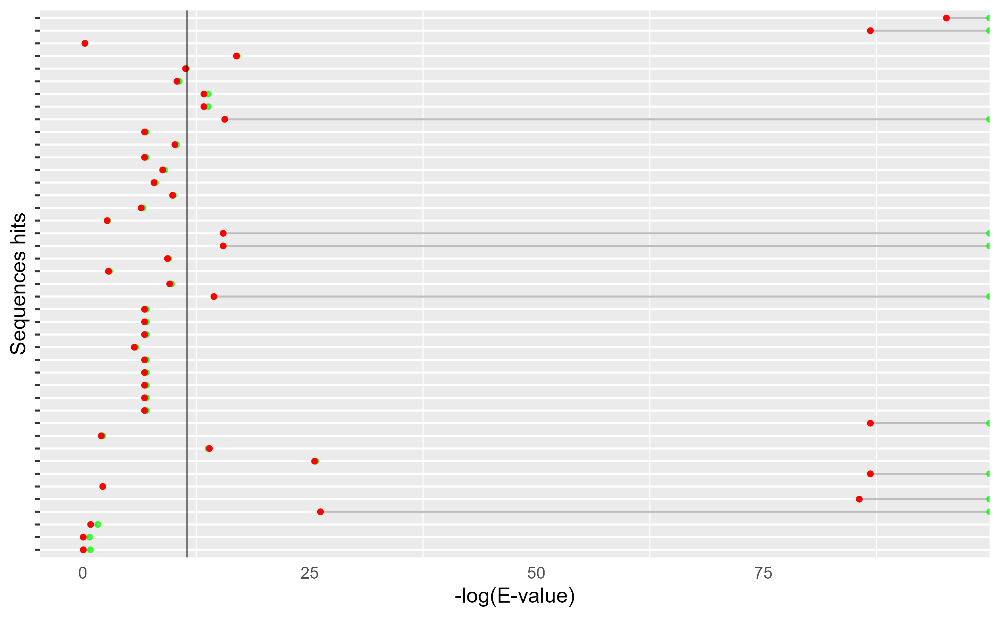
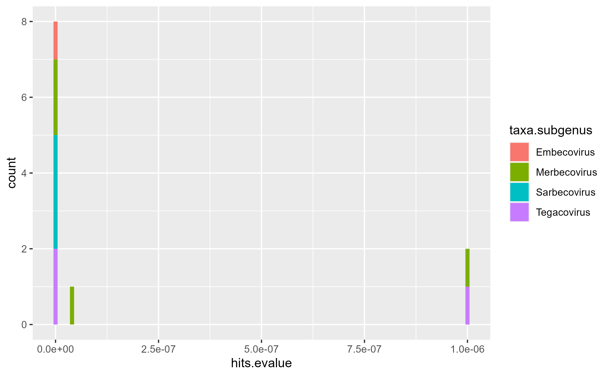
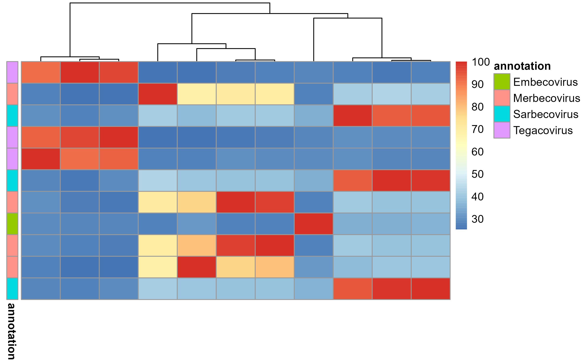
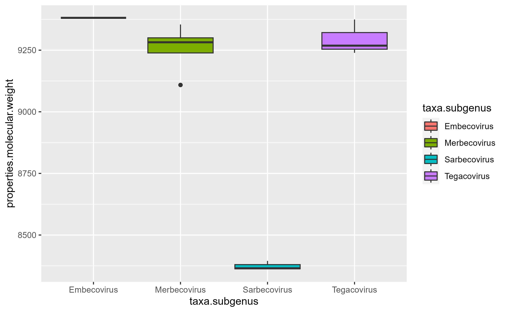

vignettes/HMMERutils.Rmd
HMMERutils.RmdHMMERutils
R is an open-source statistical environment that can be easily modified to enhance its functionality via packages. HMMERutils is an R package available via the Bioconductor repository for packages. R can be installed on any operating system from CRAN after which you can install HMMERutils by using the following commands in your R session:
if (!requireNamespace("BiocManager", quietly = TRUE)) {
install.packages("BiocManager")
}
BiocManager::install("HMMERutils")
## Check that you have a valid Bioconductor installation
BiocManager::valid()HMMERutils is based on many other packages and in particular those that have implemented the infrastructure needed for dealing with protein sequences data. That is, packages like Biostrings or Peptides.
If you are asking yourself the question “Where do I start using Bioconductor?” you might be interested in this post.
As package developers, we try to explain clearly how to use our packages and in which order to use the functions. But R and Bioconductor have a steep learning curve so it is critical to learn where to ask for help. The blog post quoted above mentions some but we would like to highlight the Bioconductor support site as the main resource for getting help: remember to use the HMMERutils tag and check the older posts. Other alternatives are available such as creating GitHub issues and tweeting. However, please note that if you want to receive the help you should adhere to the posting guidelines. It is particularly critical that you provide a small reproducible example and your session information so package developers can track down the source of the error.
HMMERutils
We hope that HMMERutils will be useful for your research. Please use the following information to cite the package and the overall approach. Thank you!
## Citation info
# citation("HMMERutils")HMMERutils
The objective of this article is to show the main functionalities of the utilsHMMER library using a case study. We will search for homologous sequences for the whole SARS-CoV-2 reference proteome.
First, let’s read the reference proteome for the Sars_CoV-2. We will read the compressed file directly from UniProt with the readAAStringSet function from the Biostrings library.
uniprot.url <- "https://ftp.uniprot.org/pub/databases/uniprot/current_release/knowledgebase/pan_proteomes/UP000464024.fasta.gz"
sars.cov.fasta <- readAAStringSet(uniprot.url)Now, we have an AAStringSet stored in the variable sars.cov.fasta and we can access the sequences it contains using the $ operator and the sequence header. However, headers usually contain, as in this case, a lot of information that is not useful right now such as descriptions.
names(sars.cov.fasta)
#> [1] "tr|A0A166ZLE2|A0A166ZLE2_9NIDO Accessory protein 7b OS=Bat coronavirus OX=1508220 GN=ORF7b PE=4 SV=1 UPId=UP000102490 PPId=UP000464024"
#> [2] "tr|A0A166ZL78|A0A166ZL78_9NIDO 3b protein OS=Bat coronavirus OX=1508220 GN=ORF3b PE=4 SV=1 UPId=UP000102490 PPId=UP000464024"
#> [3] "tr|A0A0U1WHH4|A0A0U1WHH4_SARS Accessory protein 7b OS=BtRf-BetaCoV/JL2012 OX=1503299 PE=4 SV=1 UPId=UP000123530 PPId=UP000464024"
#> [4] "tr|A0A0U1WHH1|A0A0U1WHH1_SARS ORF3b OS=BtRf-BetaCoV/JL2012 OX=1503299 PE=4 SV=1 UPId=UP000123530 PPId=UP000464024"
#> [5] "sp|P0DTC3|AP3A_SARS2 ORF3a protein OS=Severe acute respiratory syndrome coronavirus 2 OX=2697049 GN=3a PE=1 SV=1 UPId=UP000464024 PPId=UP000464024"
#> [6] "sp|P0DTC9|NCAP_SARS2 Nucleoprotein OS=Severe acute respiratory syndrome coronavirus 2 OX=2697049 GN=N PE=1 SV=1 UPId=UP000464024 PPId=UP000464024"
#> [7] "sp|P0DTC6|NS6_SARS2 ORF6 protein OS=Severe acute respiratory syndrome coronavirus 2 OX=2697049 GN=6 PE=1 SV=1 UPId=UP000464024 PPId=UP000464024"
#> [8] "sp|P0DTC7|NS7A_SARS2 ORF7a protein OS=Severe acute respiratory syndrome coronavirus 2 OX=2697049 GN=7a PE=1 SV=1 UPId=UP000464024 PPId=UP000464024"
#> [9] "sp|P0DTD8|NS7B_SARS2 ORF7b protein OS=Severe acute respiratory syndrome coronavirus 2 OX=2697049 GN=7b PE=1 SV=1 UPId=UP000464024 PPId=UP000464024"
#> [10] "sp|P0DTC8|NS8_SARS2 ORF8 protein OS=Severe acute respiratory syndrome coronavirus 2 OX=2697049 GN=8 PE=1 SV=1 UPId=UP000464024 PPId=UP000464024"
#> [11] "sp|A0A663DJA2|ORF10_SARS2 Putative ORF10 protein OS=Severe acute respiratory syndrome coronavirus 2 OX=2697049 GN=ORF10 PE=5 SV=1 UPId=UP000464024 PPId=UP000464024"
#> [12] "sp|P0DTF1|ORF3B_SARS2 Putative ORF3b protein OS=Severe acute respiratory syndrome coronavirus 2 OX=2697049 PE=5 SV=1 UPId=UP000464024 PPId=UP000464024"
#> [13] "sp|P0DTG1|ORF3C_SARS2 ORF3c protein OS=Severe acute respiratory syndrome coronavirus 2 OX=2697049 PE=4 SV=1 UPId=UP000464024 PPId=UP000464024"
#> [14] "sp|P0DTG0|ORF3D_SARS2 Putative ORF3d protein OS=Severe acute respiratory syndrome coronavirus 2 OX=2697049 PE=5 SV=1 UPId=UP000464024 PPId=UP000464024"
#> [15] "sp|P0DTD2|ORF9B_SARS2 ORF9b protein OS=Severe acute respiratory syndrome coronavirus 2 OX=2697049 GN=9b PE=1 SV=1 UPId=UP000464024 PPId=UP000464024"
#> [16] "sp|P0DTD3|ORF9C_SARS2 Putative ORF9c protein OS=Severe acute respiratory syndrome coronavirus 2 OX=2697049 GN=9c PE=5 SV=1 UPId=UP000464024 PPId=UP000464024"
#> [17] "sp|P0DTD1|R1AB_SARS2 Replicase polyprotein 1ab OS=Severe acute respiratory syndrome coronavirus 2 OX=2697049 GN=rep PE=1 SV=1 UPId=UP000464024 PPId=UP000464024"
#> [18] "sp|P0DTC1|R1A_SARS2 Replicase polyprotein 1a OS=Severe acute respiratory syndrome coronavirus 2 OX=2697049 PE=1 SV=1 UPId=UP000464024 PPId=UP000464024"
#> [19] "sp|P0DTC2|SPIKE_SARS2 Spike glycoprotein OS=Severe acute respiratory syndrome coronavirus 2 OX=2697049 GN=S PE=1 SV=1 UPId=UP000464024 PPId=UP000464024"
#> [20] "sp|P0DTC4|VEMP_SARS2 Envelope small membrane protein OS=Severe acute respiratory syndrome coronavirus 2 OX=2697049 GN=E PE=1 SV=1 UPId=UP000464024 PPId=UP000464024"
#> [21] "sp|P0DTC5|VME1_SARS2 Membrane protein OS=Severe acute respiratory syndrome coronavirus 2 OX=2697049 GN=M PE=1 SV=1 UPId=UP000464024 PPId=UP000464024"HMMERutils has a very convenient function for this purpose which is parse_fasta_headers(). Note that we use the name function to access the sequence names and the %>% operator to pass the result of one function/argument to the other in the sequence
(
names(sars.cov.fasta) <- names(sars.cov.fasta) %>%
parse_fasta_headers()
)
#> [1] "A0A166ZLE2_9NIDO" "A0A166ZL78_9NIDO" "A0A0U1WHH4_SARS" "A0A0U1WHH1_SARS"
#> [5] "AP3A_SARS2" "NCAP_SARS2" "NS6_SARS2" "NS7A_SARS2"
#> [9] "NS7B_SARS2" "NS8_SARS2" "ORF10_SARS2" "ORF3B_SARS2"
#> [13] "ORF3C_SARS2" "ORF3D_SARS2" "ORF9B_SARS2" "ORF9C_SARS2"
#> [17] "R1AB_SARS2" "R1A_SARS2" "SPIKE_SARS2" "VEMP_SARS2"
#> [21] "VME1_SARS2"We can take a look at the contents of the fasta file by “showing” it (calling the show is done implicitly):
sars.cov.fasta
#> AAStringSet object of length 21:
#> width seq names
#> [1] 52 MNELTLIDFYLCFLAFLLFLVLI...SLELQDIEEPCNKVFETYRSVL A0A166ZLE2_9NIDO
#> [2] 114 MMPTTLFAGIHIIMTTVYHTTVS...LTSLLKIRRMCKYTQSTALQEL A0A166ZL78_9NIDO
#> [3] 48 MNELTLIDFYLCFLAFLLFLVLIMLIIFWFSLELQDIEEPCNKVFETL A0A0U1WHH4_SARS
#> [4] 114 MMPTTLFAGIHIIMTTVYHTTVS...LTSLLKIRRMCKYTQSTALQEL A0A0U1WHH1_SARS
#> [5] 275 MDLFMRIFTIGTVTLKQGEIKDA...GVVNPVMEPIYDEPTTTTSVPL AP3A_SARS2
#> ... ... ...
#> [17] 7096 MESLVPGFNEKTHVQLSLPVLQV...KGRLIIRENNRVVISSDVLVNN R1AB_SARS2
#> [18] 4405 MESLVPGFNEKTHVQLSLPVLQV...DQLREPMLQSADAQSFLNGFAV R1A_SARS2
#> [19] 1273 MFVFLVLLPLVSSQCVNLTTRTQ...SCCKFDEDDSEPVLKGVKLHYT SPIKE_SARS2
#> [20] 75 MYSFVSEETGTLIVNSVLLFLAF...PSFYVYSRVKNLNSSRVPDLLV VEMP_SARS2
#> [21] 222 MADSNGTITVEELKKLLEQWNLV...IGNYKLNTDHSSSSDNIALLVQ VME1_SARS2Now, we are going to select a series of proteins that are of interest to us for this case study:
VEMP_SARS <- as.character(sars.cov.fasta$VEMP_SARS2) # Envelope small membrane protein
NS8A_SARS <- as.character(sars.cov.fasta$NS8_SARS2) # ORF8 protein
NS7B_SARS <- as.character(sars.cov.fasta$NS7B_SARS) # Protein non-structural 7b
R1AB_SARS2 <- as.character(sars.cov.fasta$R1AB_SARS2) # Replicase polyprotein 1ab OS=Severe acute respiratorAll these proteins have in common being small in size (it will speed up some computational times) and represent different possibilities: we have from membrane proteins (which we would expect to show homology with other membrane proteins), proteins similar to each other (NS8A_SARS and NS8B_SARS), non-structural proteins, and uncharacterized proteins.
The most frequently used algorithm of HMMER is phmmer. This algorithm allows us to search for homologous sequences using a protein sequence as a target against protein sequence databases.
We can post a query to the HMMER web server and read the data into a user-friendly DataFrame by using the “search_” family of functions that HMMERutils provides.
Let’s start by searching for proteins homologous to VEMP_SARS (a envelope small membrane protein) against the Swissprot database
hmmer.VEMP_SARS <- search_phmmer(
seq = VEMP_SARS, seqdb = "swissprot", verbose = FALSE
)Let’s inspect the content of the new variable we have created. We have two types of variables: the first 21 columns give us information about the query itself (such as the algorithm or the unique identifier), while the rest give us information about the content of the query.
glimpse(hmmer.VEMP_SARS[, 1:21])
#> Rows: 43
#> Columns: 21
#> $ algorithm <chr> "phmmer", "phmmer", "phmmer", "phmmer", "phmmer", "p…
#> $ uuid <chr> "31D3D19C-6745-11ED-9EE3-3AE29E870EE0", "31D3D19C-67…
#> $ stats.page <dbl> 1, 1, 1, 1, 1, 1, 1, 1, 1, 1, 1, 1, 1, 1, 1, 1, 1, 1…
#> $ stats.nhits <int> 43, 43, 43, 43, 43, 43, 43, 43, 43, 43, 43, 43, 43, …
#> $ stats.elapsed <chr> "0.05", "0.05", "0.05", "0.05", "0.05", "0.05", "0.0…
#> $ stats.Z <dbl> 565928, 565928, 565928, 565928, 565928, 565928, 5659…
#> $ stats.Z_setby <int> 0, 0, 0, 0, 0, 0, 0, 0, 0, 0, 0, 0, 0, 0, 0, 0, 0, 0…
#> $ stats.n_past_msv <int> 24059, 24059, 24059, 24059, 24059, 24059, 24059, 240…
#> $ stats.unpacked <int> 43, 43, 43, 43, 43, 43, 43, 43, 43, 43, 43, 43, 43, …
#> $ stats.nseqs <int> 565928, 565928, 565928, 565928, 565928, 565928, 5659…
#> $ stats.user <dbl> 0, 0, 0, 0, 0, 0, 0, 0, 0, 0, 0, 0, 0, 0, 0, 0, 0, 0…
#> $ stats.domZ_setby <int> 0, 0, 0, 0, 0, 0, 0, 0, 0, 0, 0, 0, 0, 0, 0, 0, 0, 0…
#> $ stats.n_past_bias <int> 14018, 14018, 14018, 14018, 14018, 14018, 14018, 140…
#> $ stats.sys <dbl> 0, 0, 0, 0, 0, 0, 0, 0, 0, 0, 0, 0, 0, 0, 0, 0, 0, 0…
#> $ stats.n_past_fwd <int> 60, 60, 60, 60, 60, 60, 60, 60, 60, 60, 60, 60, 60, …
#> $ stats.total <dbl> 1, 1, 1, 1, 1, 1, 1, 1, 1, 1, 1, 1, 1, 1, 1, 1, 1, 1…
#> $ stats.nmodels <int> 1, 1, 1, 1, 1, 1, 1, 1, 1, 1, 1, 1, 1, 1, 1, 1, 1, 1…
#> $ stats.nincluded <int> 35, 35, 35, 35, 35, 35, 35, 35, 35, 35, 35, 35, 35, …
#> $ stats.n_past_vit <int> 902, 902, 902, 902, 902, 902, 902, 902, 902, 902, 90…
#> $ stats.nreported <int> 43, 43, 43, 43, 43, 43, 43, 43, 43, 43, 43, 43, 43, …
#> $ stats.domZ <dbl> 43, 43, 43, 43, 43, 43, 43, 43, 43, 43, 43, 43, 43, …As you can see, all rows have the same values for all the previous variables. That is a deliberate decision: each row represents one sequence hit that we get by doing just one query.
Most of the parameters contained in stats are for internal use and we are only interested in a small part of them. For example, by studying the table above, we can know that HMMER found 43 hits (nhits) out of a total of 565928 sequences available (Z) in the SwissProt and that a single HMM, Hidden Markov Model, (nmodels) has been used in the search (built from our input sequence since we are using PHMMER algorithm). In case you are interested in learning more about how the results data are structured, we invite you to read the appendix of the HMMER web server.
Let’s explore the rest of the Data Frame:
glimpse(hmmer.VEMP_SARS[, 22:47])
#> Rows: 43
#> Columns: 26
#> $ hits.archScore <chr> "1", "1", "1", "1", "1", "2", "2", "2", "0", "0", "0", …
#> $ hits.ph <chr> "Pisuviricota", "Pisuviricota", "Pisuviricota", "Pisuvi…
#> $ hits.arch <chr> "PF02723.17", "PF02723.17", "PF02723.17", "PF02723.17",…
#> $ hits.kg <chr> "Viruses", "Viruses", "Viruses", "Viruses", "Viruses", …
#> $ hits.ndom <int> 1, 1, 1, 1, 1, 1, 1, 1, 1, 1, 1, 1, 1, 1, 1, 1, 1, 1, 1…
#> $ hits.extlink <chr> "http://www.uniprot.org/uniprot/VEMP_SARS2", "http://ww…
#> $ hits.acc2 <chr> "P0DTC4", "Q3LZW9", "P59637", "Q3I5J3", "Q0Q473", "Q0Q4…
#> $ hits.taxid <chr> "2697049", "442736", "694009", "349344", "389167", "389…
#> $ hits.acc <chr> "VEMP_SARS2", "VEMP_BCHK3", "VEMP_SARS", "VEMP_BCRP3", …
#> $ hits.taxlink <chr> "http://www.uniprot.org/taxonomy/", "http://www.uniprot…
#> $ hits.desc <chr> "Envelope small membrane protein", "Envelope small memb…
#> $ hits.pvalue <dbl> -108.52911, -100.14785, -100.14785, -100.14785, -98.919…
#> $ hits.flags <int> 3, 3, 3, 3, 3, 3, 3, 3, 3, 3, 3, 3, 3, 3, 3, 3, 3, 3, 3…
#> $ hits.nregions <int> 1, 1, 1, 1, 1, 1, 1, 1, 1, 1, 1, 1, 1, 1, 1, 1, 1, 1, 1…
#> $ hits.niseqs <int> 16, 16, 16, 16, 16, 16, 16, 16, 16, 16, 16, 16, 16, 16,…
#> $ hits.name <chr> "VEMP_SARS2", "VEMP_BCHK3", "VEMP_SARS", "VEMP_BCRP3", …
#> $ hits.species <chr> "Severe acute respiratory syndrome coronavirus 2", "Bat…
#> $ hits.score <chr> "145.7", "134.2", "134.2", "134.2", "132.5", "51.2", "5…
#> $ hits.bias <chr> "7.1", "6.4", "6.4", "6.4", "6.2", "3.8", "3.8", "2.9",…
#> $ hits.sindex <chr> "3311831", "3411115", "3412080", "3410610", "3410655", …
#> $ hits.nincluded <int> 1, 1, 1, 1, 1, 1, 1, 1, 1, 1, 1, 1, 1, 1, 1, 1, 1, 1, 1…
#> $ hits.domains <list> [[1, "VEMP_SARS2", 75, "", 1, ">Query", 145.53, 4.6e-4…
#> $ hits.pdbs <list> ["7k3g_C", "7m4r_C", "7ntk_H", "7k3g_D", "7ntk_C", "7k…
#> $ hits.evalue <dbl> 0.0e+00, 0.0e+00, 0.0e+00, 0.0e+00, 0.0e+00, 0.0e+00, 7…
#> $ hits.nreported <int> 1, 1, 1, 1, 1, 1, 1, 1, 1, 1, 1, 1, 1, 1, 1, 1, 1, 1, 1…
#> $ hits.archindex <chr> "88919621081425 2697049", "88919621081425 442736", "889…To get a detailed description of each variable, please read the documentation of ?phmmer_2abl (our example data set).
?phmmer_2ablFirst, we’ll begin by studying the e-values obtained. There are several types of e-values, some referring to the sequence and others referring to the domains. But what do we mean by domains? According to the HMMER manual:
A target sequence that reaches this point is very likely to contain one or more significant matches to the profile. These matches are referred to as “domains”, since the main use of HMMER has historically been to match profile HMMs from protein domain databases like Pfam, and one of HMMER’s strengths is to be able to cleanly parse a multidomain target sequence into its multiple nonoverlapping hits to the same domain model.
It is of special interest to study carefully the domain E-value when it happens that, although the full sequence E-value is good, none of the domain E-value reaches the significance threshold. In that case, what is happening is that those weak hits, none of which is good enough on its own, add up to raise the sequence to a high score. This may happen because the sequence contains several weak homologous domains, or it may contain a repetitive sequence that is hitting by chance.
HMMERutils has a function to display all the E-values of the sequences. This function hmmer_evalues_cleveland_dot_plot. In this plot, the \(−log(\text{E−value})\) is represented on the \(x\) axis, and on the \(y\) axis each of the identified sequences is represented one at a time. The green dots represent the E-values of the full sequence and the red dots the E-values of each of the domains.
hmmer_evalues_cleveland_dot_plot(
hmmer.VEMP_SARS,
threshold = 10^-5
)
By looking at it, you can see at a glance, first, how many domains have been identified for each sequence, and then how these contribute to the E-value of the full sequence and how significant they are relative to the full sequence. In this case, as can be seen, only one domain per sequence has been found (probably because they are very small).
As we didn’t identify any “red-flag”, let’s filter our data taking into account only the hits sequence E-value. We can use the HMMERutils function filter_hmmer() to achieve this.
(
hmmer.VEMP_SARS <- filter_hmmer(hmmer.VEMP_SARS, threshold = 10^-5)
)
#> algorithm uuid stats.page stats.nhits
#> 1 phmmer 31D3D19C-6745-11ED-9EE3-3AE29E870EE0 1 43
#> 2 phmmer 31D3D19C-6745-11ED-9EE3-3AE29E870EE0 1 43
#> 3 phmmer 31D3D19C-6745-11ED-9EE3-3AE29E870EE0 1 43
#> 4 phmmer 31D3D19C-6745-11ED-9EE3-3AE29E870EE0 1 43
#> 5 phmmer 31D3D19C-6745-11ED-9EE3-3AE29E870EE0 1 43
#> 6 phmmer 31D3D19C-6745-11ED-9EE3-3AE29E870EE0 1 43
#> 7 phmmer 31D3D19C-6745-11ED-9EE3-3AE29E870EE0 1 43
#> 8 phmmer 31D3D19C-6745-11ED-9EE3-3AE29E870EE0 1 43
#> 9 phmmer 31D3D19C-6745-11ED-9EE3-3AE29E870EE0 1 43
#> 10 phmmer 31D3D19C-6745-11ED-9EE3-3AE29E870EE0 1 43
#> 11 phmmer 31D3D19C-6745-11ED-9EE3-3AE29E870EE0 1 43
#> 12 phmmer 31D3D19C-6745-11ED-9EE3-3AE29E870EE0 1 43
#> 13 phmmer 31D3D19C-6745-11ED-9EE3-3AE29E870EE0 1 43
#> 14 phmmer 31D3D19C-6745-11ED-9EE3-3AE29E870EE0 1 43
#> 15 phmmer 31D3D19C-6745-11ED-9EE3-3AE29E870EE0 1 43
#> stats.elapsed stats.Z stats.Z_setby stats.n_past_msv stats.unpacked
#> 1 0.05 565928 0 24059 43
#> 2 0.05 565928 0 24059 43
#> 3 0.05 565928 0 24059 43
#> 4 0.05 565928 0 24059 43
#> 5 0.05 565928 0 24059 43
#> 6 0.05 565928 0 24059 43
#> 7 0.05 565928 0 24059 43
#> 8 0.05 565928 0 24059 43
#> 9 0.05 565928 0 24059 43
#> 10 0.05 565928 0 24059 43
#> 11 0.05 565928 0 24059 43
#> 12 0.05 565928 0 24059 43
#> 13 0.05 565928 0 24059 43
#> 14 0.05 565928 0 24059 43
#> 15 0.05 565928 0 24059 43
#> stats.nseqs stats.user stats.domZ_setby stats.n_past_bias stats.sys
#> 1 565928 0 0 14018 0
#> 2 565928 0 0 14018 0
#> 3 565928 0 0 14018 0
#> 4 565928 0 0 14018 0
#> 5 565928 0 0 14018 0
#> 6 565928 0 0 14018 0
#> 7 565928 0 0 14018 0
#> 8 565928 0 0 14018 0
#> 9 565928 0 0 14018 0
#> 10 565928 0 0 14018 0
#> 11 565928 0 0 14018 0
#> 12 565928 0 0 14018 0
#> 13 565928 0 0 14018 0
#> 14 565928 0 0 14018 0
#> 15 565928 0 0 14018 0
#> stats.n_past_fwd stats.total stats.nmodels stats.nincluded stats.n_past_vit
#> 1 60 1 1 35 902
#> 2 60 1 1 35 902
#> 3 60 1 1 35 902
#> 4 60 1 1 35 902
#> 5 60 1 1 35 902
#> 6 60 1 1 35 902
#> 7 60 1 1 35 902
#> 8 60 1 1 35 902
#> 9 60 1 1 35 902
#> 10 60 1 1 35 902
#> 11 60 1 1 35 902
#> 12 60 1 1 35 902
#> 13 60 1 1 35 902
#> 14 60 1 1 35 902
#> 15 60 1 1 35 902
#> stats.nreported stats.domZ hits.archScore hits.ph hits.arch hits.kg
#> 1 43 43 1 Pisuviricota PF02723.17 Viruses
#> 2 43 43 1 Pisuviricota PF02723.17 Viruses
#> 3 43 43 1 Pisuviricota PF02723.17 Viruses
#> 4 43 43 1 Pisuviricota PF02723.17 Viruses
#> 5 43 43 1 Pisuviricota PF02723.17 Viruses
#> 6 43 43 2 Pisuviricota PF02723.17 Viruses
#> 7 43 43 2 Pisuviricota PF02723.17 Viruses
#> 8 43 43 2 Pisuviricota PF02723.17 Viruses
#> 9 43 43 0 Pisuviricota PF02723.17 Viruses
#> 10 43 43 0 Pisuviricota PF02723.17 Viruses
#> 11 43 43 0 Pisuviricota PF02723.17 Viruses
#> 12 43 43 0 Pisuviricota PF02723.17 Viruses
#> 13 43 43 2 Pisuviricota PF02723.17 Viruses
#> 14 43 43 0 Pisuviricota PF02723.17 Viruses
#> 15 43 43 0 Pisuviricota PF02723.17 Viruses
#> hits.ndom hits.extlink hits.acc2 hits.taxid
#> 1 1 http://www.uniprot.org/uniprot/VEMP_SARS2 P0DTC4 2697049
#> 2 1 http://www.uniprot.org/uniprot/VEMP_BCHK3 Q3LZW9 442736
#> 3 1 http://www.uniprot.org/uniprot/VEMP_SARS P59637 694009
#> 4 1 http://www.uniprot.org/uniprot/VEMP_BCRP3 Q3I5J3 349344
#> 5 1 http://www.uniprot.org/uniprot/VEMP_BC279 Q0Q473 389167
#> 6 1 http://www.uniprot.org/uniprot/VEMP_BC133 Q0Q4E8 389230
#> 7 1 http://www.uniprot.org/uniprot/VEMP_BCHK4 A3EX99 694007
#> 8 1 http://www.uniprot.org/uniprot/VEMP_MERS1 K9N5R3 1263720
#> 9 1 http://www.uniprot.org/uniprot/VEMP_CVPPU P09048 11151
#> 10 1 http://www.uniprot.org/uniprot/VEMP_CVHN5 Q0ZME5 443241
#> 11 1 http://www.uniprot.org/uniprot/VEMP_CVHN2 Q14EA8 443240
#> 12 1 http://www.uniprot.org/uniprot/VEMP_CVCAI P36696 36391
#> 13 1 http://www.uniprot.org/uniprot/VEMP_BCHK5 A3EXD5 694008
#> 14 1 http://www.uniprot.org/uniprot/VEMP_CVPR8 P69611 33736
#> 15 1 http://www.uniprot.org/uniprot/VEMP_CVPRM P69610 11148
#> hits.acc hits.taxlink hits.desc
#> 1 VEMP_SARS2 http://www.uniprot.org/taxonomy/ Envelope small membrane protein
#> 2 VEMP_BCHK3 http://www.uniprot.org/taxonomy/ Envelope small membrane protein
#> 3 VEMP_SARS http://www.uniprot.org/taxonomy/ Envelope small membrane protein
#> 4 VEMP_BCRP3 http://www.uniprot.org/taxonomy/ Envelope small membrane protein
#> 5 VEMP_BC279 http://www.uniprot.org/taxonomy/ Envelope small membrane protein
#> 6 VEMP_BC133 http://www.uniprot.org/taxonomy/ Envelope small membrane protein
#> 7 VEMP_BCHK4 http://www.uniprot.org/taxonomy/ Envelope small membrane protein
#> 8 VEMP_MERS1 http://www.uniprot.org/taxonomy/ Envelope small membrane protein
#> 9 VEMP_CVPPU http://www.uniprot.org/taxonomy/ Envelope small membrane protein
#> 10 VEMP_CVHN5 http://www.uniprot.org/taxonomy/ Envelope small membrane protein
#> 11 VEMP_CVHN2 http://www.uniprot.org/taxonomy/ Envelope small membrane protein
#> 12 VEMP_CVCAI http://www.uniprot.org/taxonomy/ Envelope small membrane protein
#> 13 VEMP_BCHK5 http://www.uniprot.org/taxonomy/ Envelope small membrane protein
#> 14 VEMP_CVPR8 http://www.uniprot.org/taxonomy/ Envelope small membrane protein
#> 15 VEMP_CVPRM http://www.uniprot.org/taxonomy/ Envelope small membrane protein
#> hits.pvalue hits.flags hits.nregions hits.niseqs hits.name
#> 1 -108.52911 3 1 16 VEMP_SARS2
#> 2 -100.14785 3 1 16 VEMP_BCHK3
#> 3 -100.14785 3 1 16 VEMP_SARS
#> 4 -100.14785 3 1 16 VEMP_BCRP3
#> 5 -98.91970 3 1 16 VEMP_BC279
#> 6 -39.57741 3 1 16 VEMP_BC133
#> 7 -38.93211 3 1 16 VEMP_BCHK4
#> 8 -30.29100 3 1 16 VEMP_MERS1
#> 9 -29.06330 3 1 16 VEMP_CVPPU
#> 10 -28.90947 3 1 16 VEMP_CVHN5
#> 11 -28.90947 3 1 16 VEMP_CVHN2
#> 12 -27.84353 3 1 16 VEMP_CVCAI
#> 13 -27.36318 3 1 16 VEMP_BCHK5
#> 14 -26.76532 3 1 16 VEMP_CVPR8
#> 15 -26.76532 3 1 16 VEMP_CVPRM
#> hits.species
#> 1 Severe acute respiratory syndrome coronavirus 2
#> 2 Bat coronavirus HKU3
#> 3 Severe acute respiratory syndrome coronavirus
#> 4 Bat coronavirus Rp3/2004
#> 5 Bat CoV 279/2005
#> 6 Bat coronavirus (BtCoV/133/2005)
#> 7 Bat coronavirus HKU4
#> 8 Middle East respiratory syndrome-related coronavirus (isolate United Kingdom/H123990006/2012)
#> 9 Porcine transmissible gastroenteritis coronavirus (strain Purdue)
#> 10 Human coronavirus HKU1 (isolate N5)
#> 11 Human coronavirus HKU1 (isolate N2)
#> 12 Canine coronavirus (strain Insavc-1)
#> 13 Bat coronavirus HKU5
#> 14 Porcine respiratory coronavirus (strain 86/137004 / isolate British)
#> 15 Porcine respiratory coronavirus (strain RM4)
#> hits.score hits.bias hits.sindex hits.nincluded
#> 1 145.7 7.1 3311831 1
#> 2 134.2 6.4 3411115 1
#> 3 134.2 6.4 3412080 1
#> 4 134.2 6.4 3410610 1
#> 5 132.5 6.2 3410655 1
#> 6 51.2 3.8 3410660 1
#> 7 50.3 3.8 3411831 1
#> 8 38.4 2.9 3140808 1
#> 9 36.7 2.0 3128822 1
#> 10 36.5 1.9 3411155 1
#> 11 36.5 1.9 3411146 1
#> 12 35.1 1.4 3138702 1
#> 13 34.4 4.0 3411906 1
#> 14 33.6 1.7 3138691 1
#> 15 33.6 1.7 3128508 1
#> hits.domains
#> 1 1, VEMP_SARS2, 75, , 1, >Query, 145.530029296875, 4.6e-42, 75, 1, 75, 7.10, 1, 3.5e-46, mysfvseetgtlivnsvllflafvvfllvtlailtalrlcayccnivnvslvkpsfyvysrvknlnssrvpdllv, 1, 75, 1, , 3311831, 75, , , 0.99, MYSFVSEETGTLIVNSVLLFLAFVVFLLVTLAILTALRLCAYCCNIVNVSLVKPSFYVYSRVKNLNSSRVPDLLV, 75, 1, 8************************************************************************97, mysfvseetgtlivnsvllflafvvfllvtlailtalrlcayccnivnvslvkpsfyvysrvknlnssrvpdllv, 75, 1, , 75, , Envelope small membrane protein, VEMP_SARS2, 1, 75
#> 2 1, VEMP_BCHK3, 72, , 1, >Query, 134.040939331055, 2.0e-38, 76, 0.986666666666667, 76, 6.37, 1, 1.5e-42, mysfvseetgtlivnsvllflafvvfllvtlailtalrlcayccnivnvslvkp+ yvysrvknlnss+ vpdllv, 1, 76, 1, , 3411115, 76, , , 0.97, MYSFVSEETGTLIVNSVLLFLAFVVFLLVTLAILTALRLCAYCCNIVNVSLVKPTVYVYSRVKNLNSSEgVPDLLV, 75, 0.96, 8*****************************************************************98659***97, mysfvseetgtlivnsvllflafvvfllvtlailtalrlcayccnivnvslvkpsfyvysrvknlnssr.vpdllv, 75, 1, , 74, , Envelope small membrane protein, VEMP_BCHK3, 1, 76
#> 3 1, VEMP_SARS, 72, , 1, >Query, 134.040939331055, 2.0e-38, 76, 0.986666666666667, 76, 6.37, 1, 1.5e-42, mysfvseetgtlivnsvllflafvvfllvtlailtalrlcayccnivnvslvkp+ yvysrvknlnss+ vpdllv, 1, 76, 1, , 3412080, 76, , , 0.97, MYSFVSEETGTLIVNSVLLFLAFVVFLLVTLAILTALRLCAYCCNIVNVSLVKPTVYVYSRVKNLNSSEgVPDLLV, 75, 0.96, 8*****************************************************************98659***97, mysfvseetgtlivnsvllflafvvfllvtlailtalrlcayccnivnvslvkpsfyvysrvknlnssr.vpdllv, 75, 1, , 74, , Envelope small membrane protein, VEMP_SARS, 1, 76
#> 4 1, VEMP_BCRP3, 72, , 1, >Query, 134.040939331055, 2.0e-38, 76, 0.986666666666667, 76, 6.37, 1, 1.5e-42, mysfvseetgtlivnsvllflafvvfllvtlailtalrlcayccnivnvslvkp+ yvysrvknlnss+ vpdllv, 1, 76, 1, , 3410610, 76, , , 0.97, MYSFVSEETGTLIVNSVLLFLAFVVFLLVTLAILTALRLCAYCCNIVNVSLVKPTVYVYSRVKNLNSSEgVPDLLV, 75, 0.96, 8*****************************************************************98659***97, mysfvseetgtlivnsvllflafvvfllvtlailtalrlcayccnivnvslvkpsfyvysrvknlnssr.vpdllv, 75, 1, , 74, , Envelope small membrane protein, VEMP_BCRP3, 1, 76
#> 5 1, VEMP_BC279, 71, , 1, >Query, 132.357696533203, 6.8e-38, 76, 0.986666666666667, 76, 6.22, 1, 5.2e-42, mysfvseetgtlivnsvllf+afvvfllvtlailtalrlcayccnivnvslvkp+ yvysrvknlnss+ vpdllv, 1, 76, 1, , 3410655, 76, , , 0.97, MYSFVSEETGTLIVNSVLLFFAFVVFLLVTLAILTALRLCAYCCNIVNVSLVKPTVYVYSRVKNLNSSEgVPDLLV, 75, 0.946666666666667, 8*****************************************************************98659***97, mysfvseetgtlivnsvllflafvvfllvtlailtalrlcayccnivnvslvkpsfyvysrvknlnssr.vpdllv, 75, 1, , 74, , Envelope small membrane protein, VEMP_BC279, 1, 76
#> 6 1, VEMP_BC133, 30, , 1, >Query, 50.9613990783691, 4.2e-12, 64, 0.671875, 64, 3.81, 1, 3.2e-16, m fv e+ gt+ivn +l + + llv la+lta+rlc c++ vn l p+fy+y+ +n, 1, 82, 1, , 3410660, 71, , , 0.95, MLPFVHEQIGTIIVNFFILTVVCAITLLVCLAVLTAIRLCVQCASGVNTLLFVPAFYIYNTGRN, 64, 0.46875, 5679*******************************************************98877, mysfvseetgtlivnsvllflafvvfllvtlailtalrlcayccnivnvslvkpsfyvysrvkn, 75, 1, , 43, , Envelope small membrane protein, VEMP_BC133, 1, 64
#> 7 1, VEMP_BCHK4, 30, , 1, >Query, 50.0769119262695, 8.0e-12, 64, 0.671875, 64, 3.78, 1, 6.1e-16, m fv e+ gt+ivn +l + + l+v lailta+rlc c++ vn l p+fy+y+ +n, 1, 82, 1, , 3411831, 71, , , 0.95, MLPFVHEQIGTIIVNFFILTVVCAITLVVCLAILTAIRLCVQCASGVNTLLFVPAFYIYNTGRN, 64, 0.46875, 5679*******************************************************98877, mysfvseetgtlivnsvllflafvvfllvtlailtalrlcayccnivnvslvkpsfyvysrvkn, 75, 1, , 43, , Envelope small membrane protein, VEMP_BCHK4, 1, 64
#> 8 1, VEMP_MERS1, 25, , 1, >Query, 38.2747611999512, 4.4e-08, 63, 0.603174603174603, 63, 2.90, 1, 3.4e-12, m fv e g +ivn ++ + + llv +a+lta rlc c n lv+p++y+y+ +, 1, 82, 1, , 3140808, 73, , , 0.93, MLPFVQERIGLFIVNFFIFTVVCAITLLVCMAFLTATRLCVQCMTGFNTLLVQPALYLYNTGR, 63, 0.396825396825397, 5679************999999*************************************8755, mysfvseetgtlivnsvllflafvvfllvtlailtalrlcayccnivnvslvkpsfyvysrvk, 75, 1, , 38, , Envelope small membrane protein, VEMP_MERS1, 1, 63
#> 9 1, VEMP_CVPPU, 15, , 1, >Query, 36.5278587341309, 1.6e-07, 69, 0.649122807017544, 69, 1.98, 6, 1.2e-11, +++n ++ fl +++++l+++a+l ++lc ccn+ ++ p+ + y kn+ , 9, 82, 1, , 3128822, 77, , , 0.90, N-GMVINIIFWFLLIIILILLSIALLNIIKLCMVCCNLGRTVIIVPAQHAYDAYKNFM, 66, 0.263157894736842, 4.4789***********************************************99974, tgtlivnsvllflafvvfllvtlailtalrlcayccnivnvslvkpsfyvysrvknln, 75, 13, , 37, , Envelope small membrane protein, VEMP_CVPPU, 13, 58
#> 10 1, VEMP_CVHN5, 19, , 1, >Query, 36.2906875610352, 1.9e-07, 68, 0.611111111111111, 68, 1.90, 3, 1.4e-11, +l l+ v+fl+ +a+l ++lc c + n+ ++ ps yvy+r + l s, 15, 82, 1, , 3411155, 75, , , 0.86, QIFFLVLSCVIFLIFVVALLATIKLCIQICGFCNIFIISPSAYVYNRGRQLYKS, 68, 0.351851851851852, 455788999**************************************9998766, nsvllflafvvfllvtlailtalrlcayccnivnvslvkpsfyvysrvknlnss, 75, 15, , 33, , Envelope small membrane protein, VEMP_CVHN5, 15, 54
#> 11 1, VEMP_CVHN2, 19, , 1, >Query, 36.2906875610352, 1.9e-07, 68, 0.611111111111111, 68, 1.90, 3, 1.4e-11, +l l+ v+fl+ +a+l ++lc c + n+ ++ ps yvy+r + l s, 15, 82, 1, , 3411146, 75, , , 0.86, QIFFLVLSCVIFLIFVVALLATIKLCIQICGFCNIFIISPSAYVYNRGRQLYKS, 68, 0.351851851851852, 455788999**************************************9998766, nsvllflafvvfllvtlailtalrlcayccnivnvslvkpsfyvysrvknlnss, 75, 15, , 33, , Envelope small membrane protein, VEMP_CVHN2, 15, 54
#> 12 1, VEMP_CVCAI, 16, , 1, >Query, 34.8620529174805, 5.3e-07, 72, 0.633333333333333, 72, 1.40, 6, 4.1e-11, g ++++ ++ fl +++++l ++a+l ++lc ccn+ ++ p+ + y kn+ r, 9, 82, 1, , 3138702, 79, , , 0.88, NG-MVISIIFWFLLIIILILFSIALLNIIKLCMVCCNLGRTVIIVPARHAYDAYKNFMQIR, 69, 0.266666666666667, 44.67889999********************************************987655, tgtlivnsvllflafvvfllvtlailtalrlcayccnivnvslvkpsfyvysrvknlnssr, 75, 13, , 38, , Envelope small membrane protein, VEMP_CVCAI, 13, 61
#> 13 1, VEMP_BCHK5, 24, , 1, >Query, 34.1980476379395, 8.7e-07, 61, 0.60655737704918, 61, 4.02, 1, 6.6e-11, m fv e+ g +ivn +l + v l+v lailta+rlc c + + + p+ ++y+ , 1, 82, 1, , 3411906, 68, , , 0.94, MLPFVQEQIGAFIVNFFILSVVCAVTLVVCLAILTAIRLCVQCVSGCHTLVFLPAVHIYNT, 61, 0.39344262295082, 5679********************************************99999****9975, mysfvseetgtlivnsvllflafvvfllvtlailtalrlcayccnivnvslvkpsfyvysr, 75, 1, , 37, , Envelope small membrane protein, VEMP_BCHK5, 1, 61
#> 14 1, VEMP_CVPR8, 15, , 1, >Query, 33.3970336914062, 1.6e-06, 69, 0.649122807017544, 69, 1.73, 6, 1.2e-10, g ++++ ++ fl +++++l+++a+l ++lc ccn+ ++ p + y kn+ , 9, 82, 1, , 3138691, 78, , , 0.88, NG-MVISIIFWFLLIIILILLSIALLNIIKLCMVCCNLGRTVIIVPVQHAYDAYKNFM, 66, 0.263157894736842, 44.67889999*****************************************999974, tgtlivnsvllflafvvfllvtlailtalrlcayccnivnvslvkpsfyvysrvknln, 75, 13, , 37, , Envelope small membrane protein, VEMP_CVPR8, 13, 58
#> 15 1, VEMP_CVPRM, 15, , 1, >Query, 33.3970336914062, 1.6e-06, 69, 0.649122807017544, 69, 1.73, 6, 1.2e-10, g ++++ ++ fl +++++l+++a+l ++lc ccn+ ++ p + y kn+ , 9, 82, 1, , 3128508, 78, , , 0.88, NG-MVISIIFWFLLIIILILLSIALLNIIKLCMVCCNLGRTVIIVPVQHAYDAYKNFM, 66, 0.263157894736842, 44.67889999*****************************************999974, tgtlivnsvllflafvvfllvtlailtalrlcayccnivnvslvkpsfyvysrvknln, 75, 13, , 37, , Envelope small membrane protein, VEMP_CVPRM, 13, 58
#> hits.pdbs
#> 1 7k3g_C, 7m4r_C, 7ntk_H, 7k3g_D, 7ntk_C, 7k3g_A, 7k3g_E, 7k3g_B, 7ntk_G, 7ntk_E
#> 2 NULL
#> 3 5x29_E, 7ntj_G, 5x29_D, 5x29_A, 5xes_A, 2mm4_A, 5x29_B, 7ntj_C, 5xer_A, 5x29_C
#> 4 NULL
#> 5 NULL
#> 6 NULL
#> 7 NULL
#> 8 NULL
#> 9 NULL
#> 10 NULL
#> 11 NULL
#> 12 NULL
#> 13 NULL
#> 14 NULL
#> 15 NULL
#> hits.evalue hits.nreported hits.archindex
#> 1 0e+00 1 88919621081425 2697049
#> 2 0e+00 1 88919621081425 442736
#> 3 0e+00 1 88919621081425 694009
#> 4 0e+00 1 88919621081425 349344
#> 5 0e+00 1 88919621081425 389167
#> 6 0e+00 1 88919621081425 389230
#> 7 7e-12 1 88919621081425 694007
#> 8 4e-08 1 88919621081425 1263720
#> 9 0e+00 1 88919621081425 11151
#> 10 0e+00 1 88919621081425 443241
#> 11 0e+00 1 88919621081425 443240
#> 12 0e+00 1 88919621081425 36391
#> 13 1e-06 1 88919621081425 694008
#> 14 1e-06 1 88919621081425 33736
#> 15 1e-06 1 88919621081425 11148To download the sequences from HMMER and add them to our DataFrame, you can use the add_sequences_to_hmmer_tbl(). Notice that sequences associated with the UUID will be available in HMMER only temporarily.
(
hmmer.VEMP_SARS <- add_sequences_to_hmmer_tbl(hmmer.VEMP_SARS)
)
#> algorithm uuid stats.page stats.nhits
#> 1 phmmer 31D3D19C-6745-11ED-9EE3-3AE29E870EE0 1 43
#> 2 phmmer 31D3D19C-6745-11ED-9EE3-3AE29E870EE0 1 43
#> 3 phmmer 31D3D19C-6745-11ED-9EE3-3AE29E870EE0 1 43
#> 4 phmmer 31D3D19C-6745-11ED-9EE3-3AE29E870EE0 1 43
#> 5 phmmer 31D3D19C-6745-11ED-9EE3-3AE29E870EE0 1 43
#> 6 phmmer 31D3D19C-6745-11ED-9EE3-3AE29E870EE0 1 43
#> 7 phmmer 31D3D19C-6745-11ED-9EE3-3AE29E870EE0 1 43
#> 8 phmmer 31D3D19C-6745-11ED-9EE3-3AE29E870EE0 1 43
#> 9 phmmer 31D3D19C-6745-11ED-9EE3-3AE29E870EE0 1 43
#> 10 phmmer 31D3D19C-6745-11ED-9EE3-3AE29E870EE0 1 43
#> 11 phmmer 31D3D19C-6745-11ED-9EE3-3AE29E870EE0 1 43
#> 12 phmmer 31D3D19C-6745-11ED-9EE3-3AE29E870EE0 1 43
#> 13 phmmer 31D3D19C-6745-11ED-9EE3-3AE29E870EE0 1 43
#> 14 phmmer 31D3D19C-6745-11ED-9EE3-3AE29E870EE0 1 43
#> 15 phmmer 31D3D19C-6745-11ED-9EE3-3AE29E870EE0 1 43
#> stats.elapsed stats.Z stats.Z_setby stats.n_past_msv stats.unpacked
#> 1 0.05 565928 0 24059 43
#> 2 0.05 565928 0 24059 43
#> 3 0.05 565928 0 24059 43
#> 4 0.05 565928 0 24059 43
#> 5 0.05 565928 0 24059 43
#> 6 0.05 565928 0 24059 43
#> 7 0.05 565928 0 24059 43
#> 8 0.05 565928 0 24059 43
#> 9 0.05 565928 0 24059 43
#> 10 0.05 565928 0 24059 43
#> 11 0.05 565928 0 24059 43
#> 12 0.05 565928 0 24059 43
#> 13 0.05 565928 0 24059 43
#> 14 0.05 565928 0 24059 43
#> 15 0.05 565928 0 24059 43
#> stats.nseqs stats.user stats.domZ_setby stats.n_past_bias stats.sys
#> 1 565928 0 0 14018 0
#> 2 565928 0 0 14018 0
#> 3 565928 0 0 14018 0
#> 4 565928 0 0 14018 0
#> 5 565928 0 0 14018 0
#> 6 565928 0 0 14018 0
#> 7 565928 0 0 14018 0
#> 8 565928 0 0 14018 0
#> 9 565928 0 0 14018 0
#> 10 565928 0 0 14018 0
#> 11 565928 0 0 14018 0
#> 12 565928 0 0 14018 0
#> 13 565928 0 0 14018 0
#> 14 565928 0 0 14018 0
#> 15 565928 0 0 14018 0
#> stats.n_past_fwd stats.total stats.nmodels stats.nincluded stats.n_past_vit
#> 1 60 1 1 35 902
#> 2 60 1 1 35 902
#> 3 60 1 1 35 902
#> 4 60 1 1 35 902
#> 5 60 1 1 35 902
#> 6 60 1 1 35 902
#> 7 60 1 1 35 902
#> 8 60 1 1 35 902
#> 9 60 1 1 35 902
#> 10 60 1 1 35 902
#> 11 60 1 1 35 902
#> 12 60 1 1 35 902
#> 13 60 1 1 35 902
#> 14 60 1 1 35 902
#> 15 60 1 1 35 902
#> stats.nreported stats.domZ hits.archScore hits.ph hits.arch hits.kg
#> 1 43 43 1 Pisuviricota PF02723.17 Viruses
#> 2 43 43 1 Pisuviricota PF02723.17 Viruses
#> 3 43 43 1 Pisuviricota PF02723.17 Viruses
#> 4 43 43 1 Pisuviricota PF02723.17 Viruses
#> 5 43 43 1 Pisuviricota PF02723.17 Viruses
#> 6 43 43 2 Pisuviricota PF02723.17 Viruses
#> 7 43 43 2 Pisuviricota PF02723.17 Viruses
#> 8 43 43 2 Pisuviricota PF02723.17 Viruses
#> 9 43 43 0 Pisuviricota PF02723.17 Viruses
#> 10 43 43 0 Pisuviricota PF02723.17 Viruses
#> 11 43 43 0 Pisuviricota PF02723.17 Viruses
#> 12 43 43 0 Pisuviricota PF02723.17 Viruses
#> 13 43 43 2 Pisuviricota PF02723.17 Viruses
#> 14 43 43 0 Pisuviricota PF02723.17 Viruses
#> 15 43 43 0 Pisuviricota PF02723.17 Viruses
#> hits.ndom hits.extlink hits.acc2 hits.taxid
#> 1 1 http://www.uniprot.org/uniprot/VEMP_SARS2 P0DTC4 2697049
#> 2 1 http://www.uniprot.org/uniprot/VEMP_BCHK3 Q3LZW9 442736
#> 3 1 http://www.uniprot.org/uniprot/VEMP_SARS P59637 694009
#> 4 1 http://www.uniprot.org/uniprot/VEMP_BCRP3 Q3I5J3 349344
#> 5 1 http://www.uniprot.org/uniprot/VEMP_BC279 Q0Q473 389167
#> 6 1 http://www.uniprot.org/uniprot/VEMP_BC133 Q0Q4E8 389230
#> 7 1 http://www.uniprot.org/uniprot/VEMP_BCHK4 A3EX99 694007
#> 8 1 http://www.uniprot.org/uniprot/VEMP_MERS1 K9N5R3 1263720
#> 9 1 http://www.uniprot.org/uniprot/VEMP_CVPPU P09048 11151
#> 10 1 http://www.uniprot.org/uniprot/VEMP_CVHN5 Q0ZME5 443241
#> 11 1 http://www.uniprot.org/uniprot/VEMP_CVHN2 Q14EA8 443240
#> 12 1 http://www.uniprot.org/uniprot/VEMP_CVCAI P36696 36391
#> 13 1 http://www.uniprot.org/uniprot/VEMP_BCHK5 A3EXD5 694008
#> 14 1 http://www.uniprot.org/uniprot/VEMP_CVPR8 P69611 33736
#> 15 1 http://www.uniprot.org/uniprot/VEMP_CVPRM P69610 11148
#> hits.acc hits.taxlink hits.desc
#> 1 VEMP_SARS2 http://www.uniprot.org/taxonomy/ Envelope small membrane protein
#> 2 VEMP_BCHK3 http://www.uniprot.org/taxonomy/ Envelope small membrane protein
#> 3 VEMP_SARS http://www.uniprot.org/taxonomy/ Envelope small membrane protein
#> 4 VEMP_BCRP3 http://www.uniprot.org/taxonomy/ Envelope small membrane protein
#> 5 VEMP_BC279 http://www.uniprot.org/taxonomy/ Envelope small membrane protein
#> 6 VEMP_BC133 http://www.uniprot.org/taxonomy/ Envelope small membrane protein
#> 7 VEMP_BCHK4 http://www.uniprot.org/taxonomy/ Envelope small membrane protein
#> 8 VEMP_MERS1 http://www.uniprot.org/taxonomy/ Envelope small membrane protein
#> 9 VEMP_CVPPU http://www.uniprot.org/taxonomy/ Envelope small membrane protein
#> 10 VEMP_CVHN5 http://www.uniprot.org/taxonomy/ Envelope small membrane protein
#> 11 VEMP_CVHN2 http://www.uniprot.org/taxonomy/ Envelope small membrane protein
#> 12 VEMP_CVCAI http://www.uniprot.org/taxonomy/ Envelope small membrane protein
#> 13 VEMP_BCHK5 http://www.uniprot.org/taxonomy/ Envelope small membrane protein
#> 14 VEMP_CVPR8 http://www.uniprot.org/taxonomy/ Envelope small membrane protein
#> 15 VEMP_CVPRM http://www.uniprot.org/taxonomy/ Envelope small membrane protein
#> hits.pvalue hits.flags hits.nregions hits.niseqs hits.name
#> 1 -108.52911 3 1 16 VEMP_SARS2
#> 2 -100.14785 3 1 16 VEMP_BCHK3
#> 3 -100.14785 3 1 16 VEMP_SARS
#> 4 -100.14785 3 1 16 VEMP_BCRP3
#> 5 -98.91970 3 1 16 VEMP_BC279
#> 6 -39.57741 3 1 16 VEMP_BC133
#> 7 -38.93211 3 1 16 VEMP_BCHK4
#> 8 -30.29100 3 1 16 VEMP_MERS1
#> 9 -29.06330 3 1 16 VEMP_CVPPU
#> 10 -28.90947 3 1 16 VEMP_CVHN5
#> 11 -28.90947 3 1 16 VEMP_CVHN2
#> 12 -27.84353 3 1 16 VEMP_CVCAI
#> 13 -27.36318 3 1 16 VEMP_BCHK5
#> 14 -26.76532 3 1 16 VEMP_CVPR8
#> 15 -26.76532 3 1 16 VEMP_CVPRM
#> hits.species
#> 1 Severe acute respiratory syndrome coronavirus 2
#> 2 Bat coronavirus HKU3
#> 3 Severe acute respiratory syndrome coronavirus
#> 4 Bat coronavirus Rp3/2004
#> 5 Bat CoV 279/2005
#> 6 Bat coronavirus (BtCoV/133/2005)
#> 7 Bat coronavirus HKU4
#> 8 Middle East respiratory syndrome-related coronavirus (isolate United Kingdom/H123990006/2012)
#> 9 Porcine transmissible gastroenteritis coronavirus (strain Purdue)
#> 10 Human coronavirus HKU1 (isolate N5)
#> 11 Human coronavirus HKU1 (isolate N2)
#> 12 Canine coronavirus (strain Insavc-1)
#> 13 Bat coronavirus HKU5
#> 14 Porcine respiratory coronavirus (strain 86/137004 / isolate British)
#> 15 Porcine respiratory coronavirus (strain RM4)
#> hits.score hits.bias hits.sindex hits.nincluded
#> 1 145.7 7.1 3311831 1
#> 2 134.2 6.4 3411115 1
#> 3 134.2 6.4 3412080 1
#> 4 134.2 6.4 3410610 1
#> 5 132.5 6.2 3410655 1
#> 6 51.2 3.8 3410660 1
#> 7 50.3 3.8 3411831 1
#> 8 38.4 2.9 3140808 1
#> 9 36.7 2.0 3128822 1
#> 10 36.5 1.9 3411155 1
#> 11 36.5 1.9 3411146 1
#> 12 35.1 1.4 3138702 1
#> 13 34.4 4.0 3411906 1
#> 14 33.6 1.7 3138691 1
#> 15 33.6 1.7 3128508 1
#> hits.domains
#> 1 1, VEMP_SARS2, 75, , 1, >Query, 145.530029296875, 4.6e-42, 75, 1, 75, 7.10, 1, 3.5e-46, mysfvseetgtlivnsvllflafvvfllvtlailtalrlcayccnivnvslvkpsfyvysrvknlnssrvpdllv, 1, 75, 1, , 3311831, 75, , , 0.99, MYSFVSEETGTLIVNSVLLFLAFVVFLLVTLAILTALRLCAYCCNIVNVSLVKPSFYVYSRVKNLNSSRVPDLLV, 75, 1, 8************************************************************************97, mysfvseetgtlivnsvllflafvvfllvtlailtalrlcayccnivnvslvkpsfyvysrvknlnssrvpdllv, 75, 1, , 75, , Envelope small membrane protein, VEMP_SARS2, 1, 75
#> 2 1, VEMP_BCHK3, 72, , 1, >Query, 134.040939331055, 2.0e-38, 76, 0.986666666666667, 76, 6.37, 1, 1.5e-42, mysfvseetgtlivnsvllflafvvfllvtlailtalrlcayccnivnvslvkp+ yvysrvknlnss+ vpdllv, 1, 76, 1, , 3411115, 76, , , 0.97, MYSFVSEETGTLIVNSVLLFLAFVVFLLVTLAILTALRLCAYCCNIVNVSLVKPTVYVYSRVKNLNSSEgVPDLLV, 75, 0.96, 8*****************************************************************98659***97, mysfvseetgtlivnsvllflafvvfllvtlailtalrlcayccnivnvslvkpsfyvysrvknlnssr.vpdllv, 75, 1, , 74, , Envelope small membrane protein, VEMP_BCHK3, 1, 76
#> 3 1, VEMP_SARS, 72, , 1, >Query, 134.040939331055, 2.0e-38, 76, 0.986666666666667, 76, 6.37, 1, 1.5e-42, mysfvseetgtlivnsvllflafvvfllvtlailtalrlcayccnivnvslvkp+ yvysrvknlnss+ vpdllv, 1, 76, 1, , 3412080, 76, , , 0.97, MYSFVSEETGTLIVNSVLLFLAFVVFLLVTLAILTALRLCAYCCNIVNVSLVKPTVYVYSRVKNLNSSEgVPDLLV, 75, 0.96, 8*****************************************************************98659***97, mysfvseetgtlivnsvllflafvvfllvtlailtalrlcayccnivnvslvkpsfyvysrvknlnssr.vpdllv, 75, 1, , 74, , Envelope small membrane protein, VEMP_SARS, 1, 76
#> 4 1, VEMP_BCRP3, 72, , 1, >Query, 134.040939331055, 2.0e-38, 76, 0.986666666666667, 76, 6.37, 1, 1.5e-42, mysfvseetgtlivnsvllflafvvfllvtlailtalrlcayccnivnvslvkp+ yvysrvknlnss+ vpdllv, 1, 76, 1, , 3410610, 76, , , 0.97, MYSFVSEETGTLIVNSVLLFLAFVVFLLVTLAILTALRLCAYCCNIVNVSLVKPTVYVYSRVKNLNSSEgVPDLLV, 75, 0.96, 8*****************************************************************98659***97, mysfvseetgtlivnsvllflafvvfllvtlailtalrlcayccnivnvslvkpsfyvysrvknlnssr.vpdllv, 75, 1, , 74, , Envelope small membrane protein, VEMP_BCRP3, 1, 76
#> 5 1, VEMP_BC279, 71, , 1, >Query, 132.357696533203, 6.8e-38, 76, 0.986666666666667, 76, 6.22, 1, 5.2e-42, mysfvseetgtlivnsvllf+afvvfllvtlailtalrlcayccnivnvslvkp+ yvysrvknlnss+ vpdllv, 1, 76, 1, , 3410655, 76, , , 0.97, MYSFVSEETGTLIVNSVLLFFAFVVFLLVTLAILTALRLCAYCCNIVNVSLVKPTVYVYSRVKNLNSSEgVPDLLV, 75, 0.946666666666667, 8*****************************************************************98659***97, mysfvseetgtlivnsvllflafvvfllvtlailtalrlcayccnivnvslvkpsfyvysrvknlnssr.vpdllv, 75, 1, , 74, , Envelope small membrane protein, VEMP_BC279, 1, 76
#> 6 1, VEMP_BC133, 30, , 1, >Query, 50.9613990783691, 4.2e-12, 64, 0.671875, 64, 3.81, 1, 3.2e-16, m fv e+ gt+ivn +l + + llv la+lta+rlc c++ vn l p+fy+y+ +n, 1, 82, 1, , 3410660, 71, , , 0.95, MLPFVHEQIGTIIVNFFILTVVCAITLLVCLAVLTAIRLCVQCASGVNTLLFVPAFYIYNTGRN, 64, 0.46875, 5679*******************************************************98877, mysfvseetgtlivnsvllflafvvfllvtlailtalrlcayccnivnvslvkpsfyvysrvkn, 75, 1, , 43, , Envelope small membrane protein, VEMP_BC133, 1, 64
#> 7 1, VEMP_BCHK4, 30, , 1, >Query, 50.0769119262695, 8.0e-12, 64, 0.671875, 64, 3.78, 1, 6.1e-16, m fv e+ gt+ivn +l + + l+v lailta+rlc c++ vn l p+fy+y+ +n, 1, 82, 1, , 3411831, 71, , , 0.95, MLPFVHEQIGTIIVNFFILTVVCAITLVVCLAILTAIRLCVQCASGVNTLLFVPAFYIYNTGRN, 64, 0.46875, 5679*******************************************************98877, mysfvseetgtlivnsvllflafvvfllvtlailtalrlcayccnivnvslvkpsfyvysrvkn, 75, 1, , 43, , Envelope small membrane protein, VEMP_BCHK4, 1, 64
#> 8 1, VEMP_MERS1, 25, , 1, >Query, 38.2747611999512, 4.4e-08, 63, 0.603174603174603, 63, 2.90, 1, 3.4e-12, m fv e g +ivn ++ + + llv +a+lta rlc c n lv+p++y+y+ +, 1, 82, 1, , 3140808, 73, , , 0.93, MLPFVQERIGLFIVNFFIFTVVCAITLLVCMAFLTATRLCVQCMTGFNTLLVQPALYLYNTGR, 63, 0.396825396825397, 5679************999999*************************************8755, mysfvseetgtlivnsvllflafvvfllvtlailtalrlcayccnivnvslvkpsfyvysrvk, 75, 1, , 38, , Envelope small membrane protein, VEMP_MERS1, 1, 63
#> 9 1, VEMP_CVPPU, 15, , 1, >Query, 36.5278587341309, 1.6e-07, 69, 0.649122807017544, 69, 1.98, 6, 1.2e-11, +++n ++ fl +++++l+++a+l ++lc ccn+ ++ p+ + y kn+ , 9, 82, 1, , 3128822, 77, , , 0.90, N-GMVINIIFWFLLIIILILLSIALLNIIKLCMVCCNLGRTVIIVPAQHAYDAYKNFM, 66, 0.263157894736842, 4.4789***********************************************99974, tgtlivnsvllflafvvfllvtlailtalrlcayccnivnvslvkpsfyvysrvknln, 75, 13, , 37, , Envelope small membrane protein, VEMP_CVPPU, 13, 58
#> 10 1, VEMP_CVHN5, 19, , 1, >Query, 36.2906875610352, 1.9e-07, 68, 0.611111111111111, 68, 1.90, 3, 1.4e-11, +l l+ v+fl+ +a+l ++lc c + n+ ++ ps yvy+r + l s, 15, 82, 1, , 3411155, 75, , , 0.86, QIFFLVLSCVIFLIFVVALLATIKLCIQICGFCNIFIISPSAYVYNRGRQLYKS, 68, 0.351851851851852, 455788999**************************************9998766, nsvllflafvvfllvtlailtalrlcayccnivnvslvkpsfyvysrvknlnss, 75, 15, , 33, , Envelope small membrane protein, VEMP_CVHN5, 15, 54
#> 11 1, VEMP_CVHN2, 19, , 1, >Query, 36.2906875610352, 1.9e-07, 68, 0.611111111111111, 68, 1.90, 3, 1.4e-11, +l l+ v+fl+ +a+l ++lc c + n+ ++ ps yvy+r + l s, 15, 82, 1, , 3411146, 75, , , 0.86, QIFFLVLSCVIFLIFVVALLATIKLCIQICGFCNIFIISPSAYVYNRGRQLYKS, 68, 0.351851851851852, 455788999**************************************9998766, nsvllflafvvfllvtlailtalrlcayccnivnvslvkpsfyvysrvknlnss, 75, 15, , 33, , Envelope small membrane protein, VEMP_CVHN2, 15, 54
#> 12 1, VEMP_CVCAI, 16, , 1, >Query, 34.8620529174805, 5.3e-07, 72, 0.633333333333333, 72, 1.40, 6, 4.1e-11, g ++++ ++ fl +++++l ++a+l ++lc ccn+ ++ p+ + y kn+ r, 9, 82, 1, , 3138702, 79, , , 0.88, NG-MVISIIFWFLLIIILILFSIALLNIIKLCMVCCNLGRTVIIVPARHAYDAYKNFMQIR, 69, 0.266666666666667, 44.67889999********************************************987655, tgtlivnsvllflafvvfllvtlailtalrlcayccnivnvslvkpsfyvysrvknlnssr, 75, 13, , 38, , Envelope small membrane protein, VEMP_CVCAI, 13, 61
#> 13 1, VEMP_BCHK5, 24, , 1, >Query, 34.1980476379395, 8.7e-07, 61, 0.60655737704918, 61, 4.02, 1, 6.6e-11, m fv e+ g +ivn +l + v l+v lailta+rlc c + + + p+ ++y+ , 1, 82, 1, , 3411906, 68, , , 0.94, MLPFVQEQIGAFIVNFFILSVVCAVTLVVCLAILTAIRLCVQCVSGCHTLVFLPAVHIYNT, 61, 0.39344262295082, 5679********************************************99999****9975, mysfvseetgtlivnsvllflafvvfllvtlailtalrlcayccnivnvslvkpsfyvysr, 75, 1, , 37, , Envelope small membrane protein, VEMP_BCHK5, 1, 61
#> 14 1, VEMP_CVPR8, 15, , 1, >Query, 33.3970336914062, 1.6e-06, 69, 0.649122807017544, 69, 1.73, 6, 1.2e-10, g ++++ ++ fl +++++l+++a+l ++lc ccn+ ++ p + y kn+ , 9, 82, 1, , 3138691, 78, , , 0.88, NG-MVISIIFWFLLIIILILLSIALLNIIKLCMVCCNLGRTVIIVPVQHAYDAYKNFM, 66, 0.263157894736842, 44.67889999*****************************************999974, tgtlivnsvllflafvvfllvtlailtalrlcayccnivnvslvkpsfyvysrvknln, 75, 13, , 37, , Envelope small membrane protein, VEMP_CVPR8, 13, 58
#> 15 1, VEMP_CVPRM, 15, , 1, >Query, 33.3970336914062, 1.6e-06, 69, 0.649122807017544, 69, 1.73, 6, 1.2e-10, g ++++ ++ fl +++++l+++a+l ++lc ccn+ ++ p + y kn+ , 9, 82, 1, , 3128508, 78, , , 0.88, NG-MVISIIFWFLLIIILILLSIALLNIIKLCMVCCNLGRTVIIVPVQHAYDAYKNFM, 66, 0.263157894736842, 44.67889999*****************************************999974, tgtlivnsvllflafvvfllvtlailtalrlcayccnivnvslvkpsfyvysrvknln, 75, 13, , 37, , Envelope small membrane protein, VEMP_CVPRM, 13, 58
#> hits.pdbs
#> 1 7k3g_C, 7m4r_C, 7ntk_H, 7k3g_D, 7ntk_C, 7k3g_A, 7k3g_E, 7k3g_B, 7ntk_G, 7ntk_E
#> 2 NULL
#> 3 5x29_E, 7ntj_G, 5x29_D, 5x29_A, 5xes_A, 2mm4_A, 5x29_B, 7ntj_C, 5xer_A, 5x29_C
#> 4 NULL
#> 5 NULL
#> 6 NULL
#> 7 NULL
#> 8 NULL
#> 9 NULL
#> 10 NULL
#> 11 NULL
#> 12 NULL
#> 13 NULL
#> 14 NULL
#> 15 NULL
#> hits.evalue hits.nreported hits.archindex
#> 1 0e+00 1 88919621081425 2697049
#> 2 0e+00 1 88919621081425 442736
#> 3 0e+00 1 88919621081425 694009
#> 4 0e+00 1 88919621081425 349344
#> 5 0e+00 1 88919621081425 389167
#> 6 0e+00 1 88919621081425 389230
#> 7 7e-12 1 88919621081425 694007
#> 8 4e-08 1 88919621081425 1263720
#> 9 0e+00 1 88919621081425 11151
#> 10 0e+00 1 88919621081425 443241
#> 11 0e+00 1 88919621081425 443240
#> 12 0e+00 1 88919621081425 36391
#> 13 1e-06 1 88919621081425 694008
#> 14 1e-06 1 88919621081425 33736
#> 15 1e-06 1 88919621081425 11148
#> hits.fullfasta
#> 1 MYSFVSEETGTLIVNSVLLFLAFVVFLLVTLAILTALRLCAYCCNIVNVSLVKPSFYVYSRVKNLNSSRVPDLLV
#> 2 MYSFVSEETGTLIVNSVLLFLAFVVFLLVTLAILTALRLCAYCCNIVNVSLVKPTVYVYSRVKNLNSSEGVPDLLV
#> 3 MYSFVSEETGTLIVNSVLLFLAFVVFLLVTLAILTALRLCAYCCNIVNVSLVKPTVYVYSRVKNLNSSEGVPDLLV
#> 4 MYSFVSEETGTLIVNSVLLFLAFVVFLLVTLAILTALRLCAYCCNIVNVSLVKPTVYVYSRVKNLNSSEGVPDLLV
#> 5 MYSFVSEETGTLIVNSVLLFFAFVVFLLVTLAILTALRLCAYCCNIVNVSLVKPTVYVYSRVKNLNSSEGVPDLLV
#> 6 MLPFVHEQIGTIIVNFFILTVVCAITLLVCLAVLTAIRLCVQCASGVNTLLFVPAFYIYNTGRNAYFKFQENRPPFPPEDWV
#> 7 MLPFVHEQIGTIIVNFFILTVVCAITLVVCLAILTAIRLCVQCASGVNTLLFVPAFYIYNTGRNAYFKFQENRPPFPPEDWV
#> 8 MLPFVQERIGLFIVNFFIFTVVCAITLLVCMAFLTATRLCVQCMTGFNTLLVQPALYLYNTGRSVYVKFQDSKPPLPPDEWV
#> 9 MTFPRALTVIDDNGMVINIIFWFLLIIILILLSIALLNIIKLCMVCCNLGRTVIIVPAQHAYDAYKNFMRIKAYNPDGALLA
#> 10 MVDVFFTDTAWYVGQIFFLVLSCVIFLIFVVALLATIKLCIQICGFCNIFIISPSAYVYNRGRQLYKSYSEHVIPSTLDDLI
#> 11 MVDVFFTDTAWYVGQIFFLVLSCVIFLIFVVALLATIKLCIQICGFCNIFIISPSAYVYNRGRQLYKSYSEHVIPSTLDDLI
#> 12 MTFPRALTVIDDNGMVISIIFWFLLIIILILFSIALLNIIKLCMVCCNLGRTVIIVPARHAYDAYKNFMQIRAYNPDEALLV
#> 13 MLPFVQEQIGAFIVNFFILSVVCAVTLVVCLAILTAIRLCVQCVSGCHTLVFLPAVHIYNTGRAAYVKFQESHPPYPPEDWV
#> 14 MTFPRALTVIDDNGMVISIIFWFLLIIILILLSIALLNIIKLCMVCCNLGRTVIIVPVQHAYDAYKNFMRIKAYNPDGALLV
#> 15 MTFPRALTVIDDNGMVISIIFWFLLIIILILLSIALLNIIKLCMVCCNLGRTVIIVPVQHAYDAYKNFMRIKAYNPDGALLVBy having the sequences as a column in our Data Frane, now we can preprocess it using Tidyverse “verbs”. This is how we could filter the sequences to keep only non-redundant sequences.
(
hmmer.VEMP_SARS <- hmmer.VEMP_SARS %>%
distinct(hits.fullfasta, .keep_all = TRUE)
)
#> algorithm uuid stats.page stats.nhits
#> 1 phmmer 31D3D19C-6745-11ED-9EE3-3AE29E870EE0 1 43
#> 2 phmmer 31D3D19C-6745-11ED-9EE3-3AE29E870EE0 1 43
#> 3 phmmer 31D3D19C-6745-11ED-9EE3-3AE29E870EE0 1 43
#> 4 phmmer 31D3D19C-6745-11ED-9EE3-3AE29E870EE0 1 43
#> 5 phmmer 31D3D19C-6745-11ED-9EE3-3AE29E870EE0 1 43
#> 6 phmmer 31D3D19C-6745-11ED-9EE3-3AE29E870EE0 1 43
#> 7 phmmer 31D3D19C-6745-11ED-9EE3-3AE29E870EE0 1 43
#> 8 phmmer 31D3D19C-6745-11ED-9EE3-3AE29E870EE0 1 43
#> 9 phmmer 31D3D19C-6745-11ED-9EE3-3AE29E870EE0 1 43
#> 10 phmmer 31D3D19C-6745-11ED-9EE3-3AE29E870EE0 1 43
#> 11 phmmer 31D3D19C-6745-11ED-9EE3-3AE29E870EE0 1 43
#> stats.elapsed stats.Z stats.Z_setby stats.n_past_msv stats.unpacked
#> 1 0.05 565928 0 24059 43
#> 2 0.05 565928 0 24059 43
#> 3 0.05 565928 0 24059 43
#> 4 0.05 565928 0 24059 43
#> 5 0.05 565928 0 24059 43
#> 6 0.05 565928 0 24059 43
#> 7 0.05 565928 0 24059 43
#> 8 0.05 565928 0 24059 43
#> 9 0.05 565928 0 24059 43
#> 10 0.05 565928 0 24059 43
#> 11 0.05 565928 0 24059 43
#> stats.nseqs stats.user stats.domZ_setby stats.n_past_bias stats.sys
#> 1 565928 0 0 14018 0
#> 2 565928 0 0 14018 0
#> 3 565928 0 0 14018 0
#> 4 565928 0 0 14018 0
#> 5 565928 0 0 14018 0
#> 6 565928 0 0 14018 0
#> 7 565928 0 0 14018 0
#> 8 565928 0 0 14018 0
#> 9 565928 0 0 14018 0
#> 10 565928 0 0 14018 0
#> 11 565928 0 0 14018 0
#> stats.n_past_fwd stats.total stats.nmodels stats.nincluded stats.n_past_vit
#> 1 60 1 1 35 902
#> 2 60 1 1 35 902
#> 3 60 1 1 35 902
#> 4 60 1 1 35 902
#> 5 60 1 1 35 902
#> 6 60 1 1 35 902
#> 7 60 1 1 35 902
#> 8 60 1 1 35 902
#> 9 60 1 1 35 902
#> 10 60 1 1 35 902
#> 11 60 1 1 35 902
#> stats.nreported stats.domZ hits.archScore hits.ph hits.arch hits.kg
#> 1 43 43 1 Pisuviricota PF02723.17 Viruses
#> 2 43 43 1 Pisuviricota PF02723.17 Viruses
#> 3 43 43 1 Pisuviricota PF02723.17 Viruses
#> 4 43 43 2 Pisuviricota PF02723.17 Viruses
#> 5 43 43 2 Pisuviricota PF02723.17 Viruses
#> 6 43 43 2 Pisuviricota PF02723.17 Viruses
#> 7 43 43 0 Pisuviricota PF02723.17 Viruses
#> 8 43 43 0 Pisuviricota PF02723.17 Viruses
#> 9 43 43 0 Pisuviricota PF02723.17 Viruses
#> 10 43 43 2 Pisuviricota PF02723.17 Viruses
#> 11 43 43 0 Pisuviricota PF02723.17 Viruses
#> hits.ndom hits.extlink hits.acc2 hits.taxid
#> 1 1 http://www.uniprot.org/uniprot/VEMP_SARS2 P0DTC4 2697049
#> 2 1 http://www.uniprot.org/uniprot/VEMP_BCHK3 Q3LZW9 442736
#> 3 1 http://www.uniprot.org/uniprot/VEMP_BC279 Q0Q473 389167
#> 4 1 http://www.uniprot.org/uniprot/VEMP_BC133 Q0Q4E8 389230
#> 5 1 http://www.uniprot.org/uniprot/VEMP_BCHK4 A3EX99 694007
#> 6 1 http://www.uniprot.org/uniprot/VEMP_MERS1 K9N5R3 1263720
#> 7 1 http://www.uniprot.org/uniprot/VEMP_CVPPU P09048 11151
#> 8 1 http://www.uniprot.org/uniprot/VEMP_CVHN5 Q0ZME5 443241
#> 9 1 http://www.uniprot.org/uniprot/VEMP_CVCAI P36696 36391
#> 10 1 http://www.uniprot.org/uniprot/VEMP_BCHK5 A3EXD5 694008
#> 11 1 http://www.uniprot.org/uniprot/VEMP_CVPR8 P69611 33736
#> hits.acc hits.taxlink hits.desc
#> 1 VEMP_SARS2 http://www.uniprot.org/taxonomy/ Envelope small membrane protein
#> 2 VEMP_BCHK3 http://www.uniprot.org/taxonomy/ Envelope small membrane protein
#> 3 VEMP_BC279 http://www.uniprot.org/taxonomy/ Envelope small membrane protein
#> 4 VEMP_BC133 http://www.uniprot.org/taxonomy/ Envelope small membrane protein
#> 5 VEMP_BCHK4 http://www.uniprot.org/taxonomy/ Envelope small membrane protein
#> 6 VEMP_MERS1 http://www.uniprot.org/taxonomy/ Envelope small membrane protein
#> 7 VEMP_CVPPU http://www.uniprot.org/taxonomy/ Envelope small membrane protein
#> 8 VEMP_CVHN5 http://www.uniprot.org/taxonomy/ Envelope small membrane protein
#> 9 VEMP_CVCAI http://www.uniprot.org/taxonomy/ Envelope small membrane protein
#> 10 VEMP_BCHK5 http://www.uniprot.org/taxonomy/ Envelope small membrane protein
#> 11 VEMP_CVPR8 http://www.uniprot.org/taxonomy/ Envelope small membrane protein
#> hits.pvalue hits.flags hits.nregions hits.niseqs hits.name
#> 1 -108.52911 3 1 16 VEMP_SARS2
#> 2 -100.14785 3 1 16 VEMP_BCHK3
#> 3 -98.91970 3 1 16 VEMP_BC279
#> 4 -39.57741 3 1 16 VEMP_BC133
#> 5 -38.93211 3 1 16 VEMP_BCHK4
#> 6 -30.29100 3 1 16 VEMP_MERS1
#> 7 -29.06330 3 1 16 VEMP_CVPPU
#> 8 -28.90947 3 1 16 VEMP_CVHN5
#> 9 -27.84353 3 1 16 VEMP_CVCAI
#> 10 -27.36318 3 1 16 VEMP_BCHK5
#> 11 -26.76532 3 1 16 VEMP_CVPR8
#> hits.species
#> 1 Severe acute respiratory syndrome coronavirus 2
#> 2 Bat coronavirus HKU3
#> 3 Bat CoV 279/2005
#> 4 Bat coronavirus (BtCoV/133/2005)
#> 5 Bat coronavirus HKU4
#> 6 Middle East respiratory syndrome-related coronavirus (isolate United Kingdom/H123990006/2012)
#> 7 Porcine transmissible gastroenteritis coronavirus (strain Purdue)
#> 8 Human coronavirus HKU1 (isolate N5)
#> 9 Canine coronavirus (strain Insavc-1)
#> 10 Bat coronavirus HKU5
#> 11 Porcine respiratory coronavirus (strain 86/137004 / isolate British)
#> hits.score hits.bias hits.sindex hits.nincluded
#> 1 145.7 7.1 3311831 1
#> 2 134.2 6.4 3411115 1
#> 3 132.5 6.2 3410655 1
#> 4 51.2 3.8 3410660 1
#> 5 50.3 3.8 3411831 1
#> 6 38.4 2.9 3140808 1
#> 7 36.7 2.0 3128822 1
#> 8 36.5 1.9 3411155 1
#> 9 35.1 1.4 3138702 1
#> 10 34.4 4.0 3411906 1
#> 11 33.6 1.7 3138691 1
#> hits.domains
#> 1 1, VEMP_SARS2, 75, , 1, >Query, 145.530029296875, 4.6e-42, 75, 1, 75, 7.10, 1, 3.5e-46, mysfvseetgtlivnsvllflafvvfllvtlailtalrlcayccnivnvslvkpsfyvysrvknlnssrvpdllv, 1, 75, 1, , 3311831, 75, , , 0.99, MYSFVSEETGTLIVNSVLLFLAFVVFLLVTLAILTALRLCAYCCNIVNVSLVKPSFYVYSRVKNLNSSRVPDLLV, 75, 1, 8************************************************************************97, mysfvseetgtlivnsvllflafvvfllvtlailtalrlcayccnivnvslvkpsfyvysrvknlnssrvpdllv, 75, 1, , 75, , Envelope small membrane protein, VEMP_SARS2, 1, 75
#> 2 1, VEMP_BCHK3, 72, , 1, >Query, 134.040939331055, 2.0e-38, 76, 0.986666666666667, 76, 6.37, 1, 1.5e-42, mysfvseetgtlivnsvllflafvvfllvtlailtalrlcayccnivnvslvkp+ yvysrvknlnss+ vpdllv, 1, 76, 1, , 3411115, 76, , , 0.97, MYSFVSEETGTLIVNSVLLFLAFVVFLLVTLAILTALRLCAYCCNIVNVSLVKPTVYVYSRVKNLNSSEgVPDLLV, 75, 0.96, 8*****************************************************************98659***97, mysfvseetgtlivnsvllflafvvfllvtlailtalrlcayccnivnvslvkpsfyvysrvknlnssr.vpdllv, 75, 1, , 74, , Envelope small membrane protein, VEMP_BCHK3, 1, 76
#> 3 1, VEMP_BC279, 71, , 1, >Query, 132.357696533203, 6.8e-38, 76, 0.986666666666667, 76, 6.22, 1, 5.2e-42, mysfvseetgtlivnsvllf+afvvfllvtlailtalrlcayccnivnvslvkp+ yvysrvknlnss+ vpdllv, 1, 76, 1, , 3410655, 76, , , 0.97, MYSFVSEETGTLIVNSVLLFFAFVVFLLVTLAILTALRLCAYCCNIVNVSLVKPTVYVYSRVKNLNSSEgVPDLLV, 75, 0.946666666666667, 8*****************************************************************98659***97, mysfvseetgtlivnsvllflafvvfllvtlailtalrlcayccnivnvslvkpsfyvysrvknlnssr.vpdllv, 75, 1, , 74, , Envelope small membrane protein, VEMP_BC279, 1, 76
#> 4 1, VEMP_BC133, 30, , 1, >Query, 50.9613990783691, 4.2e-12, 64, 0.671875, 64, 3.81, 1, 3.2e-16, m fv e+ gt+ivn +l + + llv la+lta+rlc c++ vn l p+fy+y+ +n, 1, 82, 1, , 3410660, 71, , , 0.95, MLPFVHEQIGTIIVNFFILTVVCAITLLVCLAVLTAIRLCVQCASGVNTLLFVPAFYIYNTGRN, 64, 0.46875, 5679*******************************************************98877, mysfvseetgtlivnsvllflafvvfllvtlailtalrlcayccnivnvslvkpsfyvysrvkn, 75, 1, , 43, , Envelope small membrane protein, VEMP_BC133, 1, 64
#> 5 1, VEMP_BCHK4, 30, , 1, >Query, 50.0769119262695, 8.0e-12, 64, 0.671875, 64, 3.78, 1, 6.1e-16, m fv e+ gt+ivn +l + + l+v lailta+rlc c++ vn l p+fy+y+ +n, 1, 82, 1, , 3411831, 71, , , 0.95, MLPFVHEQIGTIIVNFFILTVVCAITLVVCLAILTAIRLCVQCASGVNTLLFVPAFYIYNTGRN, 64, 0.46875, 5679*******************************************************98877, mysfvseetgtlivnsvllflafvvfllvtlailtalrlcayccnivnvslvkpsfyvysrvkn, 75, 1, , 43, , Envelope small membrane protein, VEMP_BCHK4, 1, 64
#> 6 1, VEMP_MERS1, 25, , 1, >Query, 38.2747611999512, 4.4e-08, 63, 0.603174603174603, 63, 2.90, 1, 3.4e-12, m fv e g +ivn ++ + + llv +a+lta rlc c n lv+p++y+y+ +, 1, 82, 1, , 3140808, 73, , , 0.93, MLPFVQERIGLFIVNFFIFTVVCAITLLVCMAFLTATRLCVQCMTGFNTLLVQPALYLYNTGR, 63, 0.396825396825397, 5679************999999*************************************8755, mysfvseetgtlivnsvllflafvvfllvtlailtalrlcayccnivnvslvkpsfyvysrvk, 75, 1, , 38, , Envelope small membrane protein, VEMP_MERS1, 1, 63
#> 7 1, VEMP_CVPPU, 15, , 1, >Query, 36.5278587341309, 1.6e-07, 69, 0.649122807017544, 69, 1.98, 6, 1.2e-11, +++n ++ fl +++++l+++a+l ++lc ccn+ ++ p+ + y kn+ , 9, 82, 1, , 3128822, 77, , , 0.90, N-GMVINIIFWFLLIIILILLSIALLNIIKLCMVCCNLGRTVIIVPAQHAYDAYKNFM, 66, 0.263157894736842, 4.4789***********************************************99974, tgtlivnsvllflafvvfllvtlailtalrlcayccnivnvslvkpsfyvysrvknln, 75, 13, , 37, , Envelope small membrane protein, VEMP_CVPPU, 13, 58
#> 8 1, VEMP_CVHN5, 19, , 1, >Query, 36.2906875610352, 1.9e-07, 68, 0.611111111111111, 68, 1.90, 3, 1.4e-11, +l l+ v+fl+ +a+l ++lc c + n+ ++ ps yvy+r + l s, 15, 82, 1, , 3411155, 75, , , 0.86, QIFFLVLSCVIFLIFVVALLATIKLCIQICGFCNIFIISPSAYVYNRGRQLYKS, 68, 0.351851851851852, 455788999**************************************9998766, nsvllflafvvfllvtlailtalrlcayccnivnvslvkpsfyvysrvknlnss, 75, 15, , 33, , Envelope small membrane protein, VEMP_CVHN5, 15, 54
#> 9 1, VEMP_CVCAI, 16, , 1, >Query, 34.8620529174805, 5.3e-07, 72, 0.633333333333333, 72, 1.40, 6, 4.1e-11, g ++++ ++ fl +++++l ++a+l ++lc ccn+ ++ p+ + y kn+ r, 9, 82, 1, , 3138702, 79, , , 0.88, NG-MVISIIFWFLLIIILILFSIALLNIIKLCMVCCNLGRTVIIVPARHAYDAYKNFMQIR, 69, 0.266666666666667, 44.67889999********************************************987655, tgtlivnsvllflafvvfllvtlailtalrlcayccnivnvslvkpsfyvysrvknlnssr, 75, 13, , 38, , Envelope small membrane protein, VEMP_CVCAI, 13, 61
#> 10 1, VEMP_BCHK5, 24, , 1, >Query, 34.1980476379395, 8.7e-07, 61, 0.60655737704918, 61, 4.02, 1, 6.6e-11, m fv e+ g +ivn +l + v l+v lailta+rlc c + + + p+ ++y+ , 1, 82, 1, , 3411906, 68, , , 0.94, MLPFVQEQIGAFIVNFFILSVVCAVTLVVCLAILTAIRLCVQCVSGCHTLVFLPAVHIYNT, 61, 0.39344262295082, 5679********************************************99999****9975, mysfvseetgtlivnsvllflafvvfllvtlailtalrlcayccnivnvslvkpsfyvysr, 75, 1, , 37, , Envelope small membrane protein, VEMP_BCHK5, 1, 61
#> 11 1, VEMP_CVPR8, 15, , 1, >Query, 33.3970336914062, 1.6e-06, 69, 0.649122807017544, 69, 1.73, 6, 1.2e-10, g ++++ ++ fl +++++l+++a+l ++lc ccn+ ++ p + y kn+ , 9, 82, 1, , 3138691, 78, , , 0.88, NG-MVISIIFWFLLIIILILLSIALLNIIKLCMVCCNLGRTVIIVPVQHAYDAYKNFM, 66, 0.263157894736842, 44.67889999*****************************************999974, tgtlivnsvllflafvvfllvtlailtalrlcayccnivnvslvkpsfyvysrvknln, 75, 13, , 37, , Envelope small membrane protein, VEMP_CVPR8, 13, 58
#> hits.pdbs
#> 1 7k3g_C, 7m4r_C, 7ntk_H, 7k3g_D, 7ntk_C, 7k3g_A, 7k3g_E, 7k3g_B, 7ntk_G, 7ntk_E
#> 2 NULL
#> 3 NULL
#> 4 NULL
#> 5 NULL
#> 6 NULL
#> 7 NULL
#> 8 NULL
#> 9 NULL
#> 10 NULL
#> 11 NULL
#> hits.evalue hits.nreported hits.archindex
#> 1 0e+00 1 88919621081425 2697049
#> 2 0e+00 1 88919621081425 442736
#> 3 0e+00 1 88919621081425 389167
#> 4 0e+00 1 88919621081425 389230
#> 5 7e-12 1 88919621081425 694007
#> 6 4e-08 1 88919621081425 1263720
#> 7 0e+00 1 88919621081425 11151
#> 8 0e+00 1 88919621081425 443241
#> 9 0e+00 1 88919621081425 36391
#> 10 1e-06 1 88919621081425 694008
#> 11 1e-06 1 88919621081425 33736
#> hits.fullfasta
#> 1 MYSFVSEETGTLIVNSVLLFLAFVVFLLVTLAILTALRLCAYCCNIVNVSLVKPSFYVYSRVKNLNSSRVPDLLV
#> 2 MYSFVSEETGTLIVNSVLLFLAFVVFLLVTLAILTALRLCAYCCNIVNVSLVKPTVYVYSRVKNLNSSEGVPDLLV
#> 3 MYSFVSEETGTLIVNSVLLFFAFVVFLLVTLAILTALRLCAYCCNIVNVSLVKPTVYVYSRVKNLNSSEGVPDLLV
#> 4 MLPFVHEQIGTIIVNFFILTVVCAITLLVCLAVLTAIRLCVQCASGVNTLLFVPAFYIYNTGRNAYFKFQENRPPFPPEDWV
#> 5 MLPFVHEQIGTIIVNFFILTVVCAITLVVCLAILTAIRLCVQCASGVNTLLFVPAFYIYNTGRNAYFKFQENRPPFPPEDWV
#> 6 MLPFVQERIGLFIVNFFIFTVVCAITLLVCMAFLTATRLCVQCMTGFNTLLVQPALYLYNTGRSVYVKFQDSKPPLPPDEWV
#> 7 MTFPRALTVIDDNGMVINIIFWFLLIIILILLSIALLNIIKLCMVCCNLGRTVIIVPAQHAYDAYKNFMRIKAYNPDGALLA
#> 8 MVDVFFTDTAWYVGQIFFLVLSCVIFLIFVVALLATIKLCIQICGFCNIFIISPSAYVYNRGRQLYKSYSEHVIPSTLDDLI
#> 9 MTFPRALTVIDDNGMVISIIFWFLLIIILILFSIALLNIIKLCMVCCNLGRTVIIVPARHAYDAYKNFMQIRAYNPDEALLV
#> 10 MLPFVQEQIGAFIVNFFILSVVCAVTLVVCLAILTAIRLCVQCVSGCHTLVFLPAVHIYNTGRAAYVKFQESHPPYPPEDWV
#> 11 MTFPRALTVIDDNGMVISIIFWFLLIIILILLSIALLNIIKLCMVCCNLGRTVIIVPVQHAYDAYKNFMRIKAYNPDGALLVNow we can explore the nature of these sequences. One aspect of great interest is the taxonomic distribution of these sequences. We can consult it because we have the hits.taxid parameter, which identifies taxonomic species. We proceed to taxonomically annotate the results using the add_taxa_to_HMMER_tbl function
hmmer.VEMP_SARS <- add_taxa_to_hmmer_tbl(hmmer.VEMP_SARS, mode = "local")
#> Registered S3 method overwritten by 'hoardr':
#> method from
#> print.cache_info httrNote that we have indicated the parameter mode = “local” to note that we don’t want to use remote resources. Using remote resources can be slow, we advise you, if the amount of sequences is considerable, to use the “local” option to install (only once) and then use a local database.
Now, we can use all the meta library of tidyverse and ggplot2 to explore the data and make graphs. Let’s see an example of what could be done:
ggplot(
data = hmmer.VEMP_SARS,
mapping = aes(x = hits.evalue, fill = taxa.subgenus)
) +
geom_histogram(binwidth = 10^-8)
To examine the diversity of the sequences we can align all the sequences in pairs and then calculate the percentages of identity for each one using the pairwise_alignment_sequence_identity function.
When calling this function, we need to specify which sequences we want to compare (as a vector of characters), the type of alignment, and the type of sequence identity we are going to use. In this case, we will use the default options: aln_type = "global" (align whole strings with end gap penalties by using the Needleman-Wunsch algorithm) and pid_type = "PID1" ( PID1=100⋅identical position aligned positions + internal gap positions).
percentage_identities <- pairwise_alignment_sequence_identity(
seqs = hmmer.VEMP_SARS$hits.fullfasta,
aln_type = "global",
pid_type = "PID1"
)Now, we can inspect the distribution of those values in a histogram:
pairwise_sequence_identity_histogram(percentage_identities)And, to compare this information with other parameters, a heatmap is. Note that we use the taxa.subgenus column to annotate the heatmap, for which we use the annotation argument and the $ operator.
pairwise_sequence_identity_heatmap(
percentage_identities,
annotation = hmmer.VEMP_SARS$taxa.subgenus
)
We can study what the sequences we have obtained are like in more detail by calculating physicochemical properties based on their primary sequence. To do this, we can use the add_physicochemical_properties_to_HMMER_tbl function
hmmer.VEMP_SARS <- hmmer.VEMP_SARS %>%
add_physicochemical_properties_to_HMMER_tbl()Let’s see how are these new properties distributed along our sequences:
hmmer.VEMP_SARS %>%
ggplot(
aes(x = taxa.subgenus, y = properties.molecular.weight, fill = taxa.subgenus)
) +
geom_boxplot()
So far, we have been working with the results of a single search. This case study has allowed us to describe in depth most of the utilities of this library. However, the most common scenario is that we want to work with the results of several searches. Let’s try performing a search with PHMMER for the sequence of NS8A_SARS against SwissProt and PDB.
For this example, moreover, we will not go step by step but will show how HMMERutils can perform all of the above operations in a few lines of code. You can refer to the information regarding the search_phmmer function using ?search_phmmer for a complete listing of options.
(
hmmer.NS8A_SARS <- search_phmmer(
seq = NS8A_SARS,
seqdb = c("pdb", "swissprot"),
verbose = FALSE
)
)
#> # A tibble: 9 × 48
#> algori…¹ uuid stats…² stats…³ stats…⁴ stats.Z stats…⁵ stats…⁶ stats…⁷ stats…⁸
#> <chr> <chr> <dbl> <int> <chr> <dbl> <int> <int> <int> <int>
#> 1 phmmer 3BE5… 1 2 0.08 546676 0 2698 2 546676
#> 2 phmmer 3BE5… 1 2 0.08 546676 0 2698 2 546676
#> 3 phmmer 3C56… 1 7 0.09 565928 0 10855 7 565928
#> 4 phmmer 3C56… 1 7 0.09 565928 0 10855 7 565928
#> 5 phmmer 3C56… 1 7 0.09 565928 0 10855 7 565928
#> 6 phmmer 3C56… 1 7 0.09 565928 0 10855 7 565928
#> 7 phmmer 3C56… 1 7 0.09 565928 0 10855 7 565928
#> 8 phmmer 3C56… 1 7 0.09 565928 0 10855 7 565928
#> 9 phmmer 3C56… 1 7 0.09 565928 0 10855 7 565928
#> # … with 38 more variables: stats.user <dbl>, stats.domZ_setby <int>,
#> # stats.n_past_bias <int>, stats.sys <dbl>, stats.n_past_fwd <int>,
#> # stats.total <dbl>, stats.nmodels <int>, stats.nincluded <int>,
#> # stats.n_past_vit <int>, stats.nreported <int>, stats.domZ <dbl>,
#> # hits.archScore <chr>, hits.ph <chr>, hits.arch <chr>, hits.kg <chr>,
#> # hits.ndom <int>, hits.extlink <chr>, hits.taxid <chr>, hits.acc <chr>,
#> # hits.taxlink <chr>, hits.desc <chr>, hits.pvalue <dbl>, hits.seqs <list>, …Note that, now, the number of searches performed is 2:
unique(hmmer.NS8A_SARS$uuid)
#> [1] "3BE570D2-6745-11ED-A01F-0B0CB769042E"
#> [2] "3C5697B2-6745-11ED-A01F-0B0CB769042E"Now, using the pipe operator, we are going to filter the sequences, read the sequences, annotate them taxonomically, and calculate the physicochemical properties of the sequences.
hmmer.NS8A_SARS <- hmmer.NS8A_SARS %>%
filter_hmmer() %>%
add_sequences_to_hmmer_tbl() %>%
add_taxa_to_hmmer_tbl(mode = "local") %>%
add_physicochemical_properties_to_HMMER_tbl()As we have searched against PDB, now we have a new column, which is called hits.pdbs. To explore the PDB files available for homologous sequences we can “extract” those nested rows.
pdbs <- extract_from_hmmer(hmmer.NS8A_SARS, column = "hits.pdbs")
unique(pdbs$pdbs)
#> [[1]]
#> [1] "7jx6_A"
#>
#> [[2]]
#> [1] NA
#>
#> [[3]]
#> [1] "7jtl_B"
#>
#> [[4]]
#> [1] "7jtl_A"
#>
#> [[5]]
#> [1] "7jx6_B"We can do the same to study the domains (default behavior):
domains <- extract_from_hmmer(hmmer.NS8A_SARS)
unique(domains$domains.alisqdesc)
#> [1] "ORF8 protein" "Non-structural protein 8"So far, we have only used PHMMER, since it is the most used and default algorithm. However, HMMERutils allows us to work with all HMMER algorithms. Let’s see how it can be used to perform a search using hmmsearch. This algorithm performs a sequence search in the same databases as PHMMER with the difference that, instead of building a hidden Markov model with a single sequence, it does it with an alignment.
For this example, we will use a fake alignment (that’s why we are creating it from a vector, instead of reading an actual file, using the readAAMultipleAlignment function.
alignment <- AAMultipleAlignment(c(
"FQTWEEFSRAAEKLYLADPMKVRVVLKYRHVDGNLCIKVTDDLVCLVYRTDQAQDVKKIEKF",
"KYRTWEEFTRAAEKLYQADPMKVRVVLKYRHCDGNLCIKVTDDVVCLLYRTDQAQDVKKIEK",
"EEYQTWEEFARAAEKLYLTDPMKVRVVLKYRHCDGNLCMKVTDDAVCLQYKTDQAQDVKKVE",
"EEFSRAVEKLYLTDPMKVRVVLKYRHCDGNLCIKVTDNSVVSYEMRLFGVQKDNFALEHSLL",
"SWEEFAKAAEVLYLEDPMKCRMCTKYRHVDHKLVVKLTDNHTVLKYVTDMAQDVKKIEKLTT",
"FTNWEEFAKAAERLHSANPEKCRFVTKYNHTKGELVLKLTDDVVCLQYSTNQLQDVKKLEKL",
"SWEEFVERSVQLFRGDPNATRYVMKYRHCEGKLVLKVTDDRECLKFKTDQAQDAKKMEKLNN"
))Now, let’s perform a query using hmmsearch:
fake_data <- search_hmmsearch(alignment)Another HMMER algorithm that can be used through HMMERutils is HMMSCAN. This algorithm performs a search of a protein sequence against an HMM database and can be used to identify domains in our sequence. Let’s see which domains we can find in VEMP_SARS:
(
scan.VEMP_SARS <- search_hmmscan(VEMP_SARS)
)
#> # A tibble: 1 × 36
#> algori…¹ uuid stats…² stats…³ stats…⁴ stats.Z stats…⁵ stats…⁶ stats…⁷ stats…⁸
#> <chr> <chr> <dbl> <int> <chr> <dbl> <int> <int> <int> <int>
#> 1 hmmscan 3F02… 1 1 0.06 19632 0 1297 1 1
#> # … with 26 more variables: stats.user <dbl>, stats.domZ_setby <int>,
#> # stats.n_past_bias <int>, stats.sys <dbl>, stats.n_past_fwd <int>,
#> # stats.total <dbl>, stats.nmodels <int>, stats.nincluded <int>,
#> # stats.n_past_vit <int>, stats.nreported <int>, stats.domZ <dbl>,
#> # hits.flags <int>, hits.nregions <int>, hits.ndom <int>, hits.name <chr>,
#> # hits.score <chr>, hits.bias <chr>, hits.taxid <chr>, hits.acc <chr>,
#> # hits.domains <list>, hits.nincluded <int>, hits.evalue <dbl>, …
scan.VEMP_SARS$hits.acc
#> [1] "PF02723.17"The HMMERutils package was made possible thanks to:
This package was developed using biocthis.
Code for creating the vignette
## Create the vignette
library("rmarkdown")
system.time(render("HMMERutils.Rmd", "BiocStyle::html_document"))
## Extract the R code
library("knitr")
knit("HMMERutils.Rmd", tangle = TRUE)Date the vignette was generated.
#> [1] "2022-11-18 14:31:02 CET"Wallclock time spent generating the vignette.
#> Time difference of 28.821 secsR session information.
#> ─ Session info ───────────────────────────────────────────────────────────────────────────────────────────────────────
#> setting value
#> version R version 4.2.2 (2022-10-31)
#> os Ubuntu 20.04.5 LTS
#> system x86_64, linux-gnu
#> ui X11
#> language en
#> collate C.UTF-8
#> ctype C.UTF-8
#> tz Europe/Copenhagen
#> date 2022-11-18
#> pandoc 2.5 @ /usr/bin/ (via rmarkdown)
#>
#> ─ Packages ───────────────────────────────────────────────────────────────────────────────────────────────────────────
#> ! package * version date (UTC) lib source
#> ape 5.6-2 2022-03-02 [1] CRAN (R 4.2.2)
#> P assertthat 0.2.1 2019-03-21 [?] CRAN (R 4.2.2)
#> P backports 1.4.1 2021-12-13 [?] CRAN (R 4.2.2)
#> P bibtex 0.5.0 2022-09-25 [?] CRAN (R 4.2.2)
#> P BiocGenerics * 0.42.0 2022-04-26 [?] Bioconductor
#> P BiocManager 1.30.19 2022-10-25 [?] CRAN (R 4.2.2)
#> P BiocStyle * 2.24.0 2022-04-26 [?] Bioconductor
#> P Biostrings * 2.64.1 2022-08-18 [?] Bioconductor
#> P bit 4.0.4 2020-08-04 [?] CRAN (R 4.2.2)
#> P bit64 4.0.5 2020-08-30 [?] CRAN (R 4.2.2)
#> P bitops 1.0-7 2021-04-24 [?] CRAN (R 4.2.2)
#> P blob 1.2.3 2022-04-10 [?] CRAN (R 4.2.2)
#> bold 1.2.0 2021-05-11 [1] CRAN (R 4.2.2)
#> P bookdown 0.29 2022-09-12 [?] CRAN (R 4.2.2)
#> P bslib 0.4.0 2022-07-16 [?] CRAN (R 4.2.2)
#> P cachem 1.0.6 2021-08-19 [?] CRAN (R 4.2.2)
#> P cli 3.4.1 2022-09-23 [?] CRAN (R 4.2.2)
#> P codetools 0.2-18 2020-11-04 [?] CRAN (R 4.2.2)
#> colorspace 2.0-3 2022-02-21 [1] CRAN (R 4.2.2)
#> conditionz 0.1.0 2019-04-24 [1] CRAN (R 4.2.2)
#> P crayon 1.5.2 2022-09-29 [?] CRAN (R 4.2.2)
#> crul 1.3 2022-09-03 [1] CRAN (R 4.2.2)
#> P curl 4.3.3 2022-10-06 [?] CRAN (R 4.2.2)
#> data.table 1.14.4 2022-10-17 [1] CRAN (R 4.2.2)
#> P DBI 1.1.3 2022-06-18 [?] CRAN (R 4.2.2)
#> P dbplyr 2.2.1 2022-06-27 [?] CRAN (R 4.2.2)
#> P desc 1.4.2 2022-09-08 [?] CRAN (R 4.2.2)
#> P digest 0.6.30 2022-10-18 [?] CRAN (R 4.2.2)
#> P dplyr * 1.0.10 2022-09-01 [?] CRAN (R 4.2.2)
#> P ellipsis 0.3.2 2021-04-29 [?] CRAN (R 4.2.2)
#> P evaluate 0.17 2022-10-07 [?] CRAN (R 4.2.2)
#> P fansi 1.0.3 2022-03-24 [?] CRAN (R 4.2.2)
#> farver 2.1.1 2022-07-06 [1] CRAN (R 4.2.2)
#> P fastmap 1.1.0 2021-01-25 [?] CRAN (R 4.2.2)
#> foreach 1.5.2 2022-02-02 [1] CRAN (R 4.2.2)
#> P fs 1.5.2 2021-12-08 [?] CRAN (R 4.2.2)
#> P generics 0.1.3 2022-07-05 [?] CRAN (R 4.2.2)
#> P GenomeInfoDb * 1.32.4 2022-09-06 [?] Bioconductor
#> P GenomeInfoDbData 1.2.8 2022-11-06 [?] Bioconductor
#> ggplot2 * 3.4.0 2022-11-04 [1] CRAN (R 4.2.2)
#> P glue 1.6.2 2022-02-24 [?] CRAN (R 4.2.2)
#> gtable 0.3.1 2022-09-01 [1] CRAN (R 4.2.2)
#> P highr 0.9 2021-04-16 [?] CRAN (R 4.2.2)
#> HMMERutils * 0.99.0 2022-11-17 [1] Bioconductor
#> P hoardr 0.5.2 2018-12-02 [?] CRAN (R 4.2.2)
#> P htmltools 0.5.3 2022-07-18 [?] CRAN (R 4.2.2)
#> httpcode 0.3.0 2020-04-10 [1] CRAN (R 4.2.2)
#> P httr 1.4.4 2022-08-17 [?] CRAN (R 4.2.2)
#> P IRanges * 2.30.1 2022-08-18 [?] Bioconductor
#> iterators 1.0.14 2022-02-05 [1] CRAN (R 4.2.2)
#> P jquerylib 0.1.4 2021-04-26 [?] CRAN (R 4.2.2)
#> P jsonlite 1.8.3 2022-10-21 [?] CRAN (R 4.2.2)
#> P knitr 1.40 2022-08-24 [?] CRAN (R 4.2.2)
#> labeling 0.4.2 2020-10-20 [1] CRAN (R 4.2.2)
#> P lattice 0.20-45 2021-09-22 [?] CRAN (R 4.2.2)
#> P lifecycle 1.0.3 2022-10-07 [?] CRAN (R 4.2.2)
#> P lubridate 1.8.0 2021-10-07 [?] CRAN (R 4.2.2)
#> P magrittr 2.0.3 2022-03-30 [?] CRAN (R 4.2.2)
#> P memoise 2.0.1 2021-11-26 [?] CRAN (R 4.2.2)
#> munsell 0.5.0 2018-06-12 [1] CRAN (R 4.2.2)
#> P nlme 3.1-160 2022-10-10 [?] CRAN (R 4.2.2)
#> P Peptides 2.4.4 2021-05-14 [?] CRAN (R 4.2.2)
#> pheatmap 1.0.12 2019-01-04 [1] CRAN (R 4.2.2)
#> P pillar 1.8.1 2022-08-19 [?] CRAN (R 4.2.2)
#> P pkgconfig 2.0.3 2019-09-22 [?] CRAN (R 4.2.2)
#> P pkgdown 2.0.6 2022-07-16 [?] CRAN (R 4.2.2)
#> P plyr 1.8.7 2022-03-24 [?] CRAN (R 4.2.2)
#> P purrr 0.3.5 2022-10-06 [?] CRAN (R 4.2.2)
#> P R6 2.5.1 2021-08-19 [?] CRAN (R 4.2.2)
#> P ragg 1.2.4 2022-10-24 [?] CRAN (R 4.2.2)
#> P rappdirs 0.3.3 2021-01-31 [?] CRAN (R 4.2.2)
#> RColorBrewer 1.1-3 2022-04-03 [1] CRAN (R 4.2.2)
#> P Rcpp 1.0.9 2022-07-08 [?] CRAN (R 4.2.2)
#> P RCurl 1.98-1.9 2022-10-03 [?] CRAN (R 4.2.2)
#> P RefManageR * 1.4.0 2022-09-30 [?] CRAN (R 4.2.2)
#> renv 0.16.0 2022-09-29 [1] CRAN (R 4.2.2)
#> reshape 0.8.9 2022-04-12 [1] CRAN (R 4.2.2)
#> P rlang 1.0.6 2022-09-24 [?] CRAN (R 4.2.2)
#> P rmarkdown 2.17 2022-10-07 [?] CRAN (R 4.2.2)
#> P rprojroot 2.0.3 2022-04-02 [?] CRAN (R 4.2.2)
#> P RSQLite 2.2.18 2022-10-04 [?] CRAN (R 4.2.2)
#> P S4Vectors * 0.34.0 2022-04-26 [?] Bioconductor
#> P sass 0.4.2 2022-07-16 [?] CRAN (R 4.2.2)
#> scales 1.2.1 2022-08-20 [1] CRAN (R 4.2.2)
#> P sessioninfo * 1.2.2 2021-12-06 [?] CRAN (R 4.2.2)
#> P stringi 1.7.8 2022-07-11 [?] CRAN (R 4.2.2)
#> P stringr 1.4.1 2022-08-20 [?] CRAN (R 4.2.2)
#> P systemfonts 1.0.4 2022-02-11 [?] CRAN (R 4.2.2)
#> taxize 0.9.100 2022-04-22 [1] CRAN (R 4.2.2)
#> P taxizedb 0.3.0 2021-01-15 [?] CRAN (R 4.2.2)
#> P textshaping 0.3.6 2021-10-13 [?] CRAN (R 4.2.2)
#> P tibble 3.1.8 2022-07-22 [?] CRAN (R 4.2.2)
#> P tidyr 1.2.1 2022-09-08 [?] CRAN (R 4.2.2)
#> P tidyselect 1.2.0 2022-10-10 [?] CRAN (R 4.2.2)
#> P utf8 1.2.2 2021-07-24 [?] CRAN (R 4.2.2)
#> uuid 1.1-0 2022-04-19 [1] CRAN (R 4.2.2)
#> vctrs 0.5.0 2022-10-22 [1] CRAN (R 4.2.2)
#> P withr 2.5.0 2022-03-03 [?] CRAN (R 4.2.2)
#> P xfun 0.34 2022-10-18 [?] CRAN (R 4.2.2)
#> P xml2 1.3.3 2021-11-30 [?] CRAN (R 4.2.2)
#> P XVector * 0.36.0 2022-04-26 [?] Bioconductor
#> P yaml 2.3.6 2022-10-18 [?] CRAN (R 4.2.2)
#> P zlibbioc 1.42.0 2022-04-26 [?] Bioconductor
#> zoo 1.8-11 2022-09-17 [1] CRAN (R 4.2.2)
#>
#> [1] /home/currocam/.cache/R/renv/library/HMMERutils-c54e77b1/R-4.2/x86_64-pc-linux-gnu
#> [2] /home/currocam/Code/HMMERutils/renv/sandbox/R-4.2/x86_64-pc-linux-gnu/9a444a72
#>
#> P ── Loaded and on-disk path mismatch.
#>
#> ──────────────────────────────────────────────────────────────────────────────────────────────────────────────────────This vignette was generated using BiocStyle (Oleś, 2022) with knitr (Xie, 2022) and rmarkdown (Allaire, Xie, McPherson et al., 2022) running behind the scenes.
Citations made with RefManageR (McLean, 2017).
[1] J. Allaire, Y. Xie, J. McPherson, et al. rmarkdown: Dynamic Documents for R. R package version 2.17. 2022. URL: https://github.com/rstudio/rmarkdown.
[2] M. W. McLean. “RefManageR: Import and Manage BibTeX and BibLaTeX References in R”. In: The Journal of Open Source Software (2017). DOI: 10.21105/joss.00338.
[3] A. Oleś. BiocStyle: Standard styles for vignettes and other Bioconductor documents. R package version 2.24.0. 2022. URL: https://github.com/Bioconductor/BiocStyle.
[4] R Core Team. R: A Language and Environment for Statistical Computing. R Foundation for Statistical Computing. Vienna, Austria, 2022. URL: https://www.R-project.org/.
[5] H. Wickham. “testthat: Get Started with Testing”. In: The R Journal 3 (2011), pp. 5–10. URL: https://journal.r-project.org/archive/2011-1/RJournal_2011-1_Wickham.pdf.
[6] H. Wickham, W. Chang, R. Flight, et al. sessioninfo: R Session Information. R package version 1.2.2. 2021. URL: https://CRAN.R-project.org/package=sessioninfo.
[7] Y. Xie. knitr: A General-Purpose Package for Dynamic Report Generation in R. R package version 1.40. 2022. URL: https://yihui.org/knitr/.